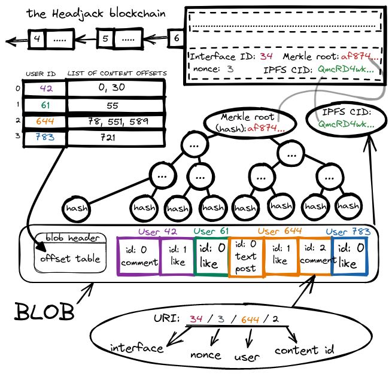
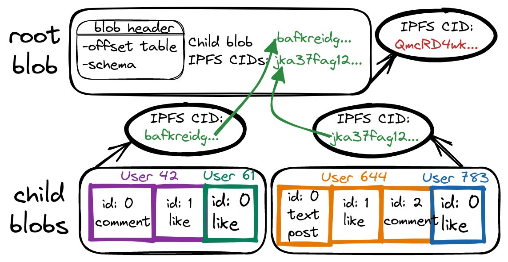
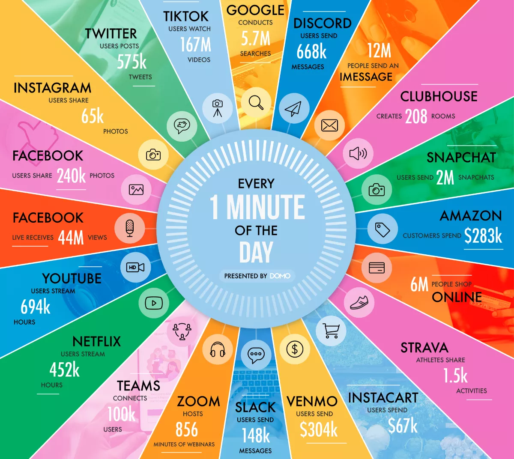

Headjack - the base layer of cyberspace
Headjack is an open state database designed for web-scale media (in the billions of users) that addresses the most fundamental pieces of the puzzle: identity, connections, names and content addressing with human-readable & persistent URI paths (instead of hashes) all packaged in a credibly neutral & self-sustaining blockchain. It is aiming to disaggregate the giants and end network effect monopolies & data silos by aligning incentives and acting as the backend network that users won't even need to know about by striking the right set of tradeoffs. It is engineered from first principles - building up from the data to support billions of users and a customer obsession for the best UX - there will be no mass adoption without retaining the comforts and UX of Web2 that we've become so accustomed to.
Headjack is an information network. It solves identity & universal sign-on. It is an addressability layer that is agnostic to the means of delivery. It is an index and a historian - the ledger of record.
The following sub-chapters convey the idea (what) and a high-level view of how it works:
- On-chain vs off-chain
- Guiding principles
- Identity & authorization
- Content addressing
- Web-scale & UX
- Numbers
- Competition
But the vision would be incomplete without the subsequent why and more detailed how.
Inspired by the data port at the back of the head of synthetically-grown humans in the Matrix.
On-chain vs off-chain
Due to practical limitations, it is impossible to put everything on a blockchain so we have to make a key distinction:
- The importance of user data is on a spectrum with identity & connections being the most valuable - a clear example is Substack (basically Medium but you own the mailing list for your audience). The interest graph is the subscription layer for information propagation - a forward-looking & ever-evolving data structure that gets reused over and over again each time content is created. It is the essential crown jewel that needs preservation - the global pub-sub. The data availability (DA - storage & retrievability) for identity & the interest graph needs to be guaranteed with cryptoeconomics on a permissionless ledger so anyone can build around it.
- Content should be stored off-chain (IPFS and other protocols) because of the sheer volume - it's ephemeral and its relevance fades with time. Most of it doesn't have to be stored forever but any piece can be backed up through third-party archival services. It gets anchored with cryptographic Merkle roots in the main chain so that permissions, inclusion & sequence are provable - that way even if content goes dark it can later resurface and be deduplicated by linking it to previous instances (as long as Merkle proofs are present).
The terms message/event/action/data/content are used interchangeably in this book and refer to any type of event/content a user might have generated - post/comment/reaction/etc.
"When identities become portable, backends become liquid" - @balajis
The game theory behind why competing interfaces (presentation layers/applications/views - probably operated by a company with a business model) would freely share the activity of their users with others to display is that if they don't they would be effectively denying reach - users would migrate to a competitor because the cost to do so is 0 - voice and exit. Current social media platforms are monopolies because identities are not portable and the network effects are in private database silos - a problem practically insurmountable for incumbents.
Guiding principles
There are 5 guiding principles when aiming for mass adoption & parity on convenience & UX with Web2 services:
-
Aggregation and scale cannot be an afterthought - must be scalable to billions of users and that must be obvious & provable if entrepreneurs are expected to jump on the opportunity. The easiest mental model will win over developers - opinionated frameworks with a concrete direction are much simpler than a sea of standards, libraries & chains.
-
"Developers care about risk." - Haseeb
-
-
Must be simple and familiar - abstracting the complexity away. Users shouldn't have to manage keypairs on multiple devices & explicitly sign every interaction - by default they'll be logging into identity managers (IDMs) using email & pass / SSO (
"login with Google") and would then be using these IDMs as SSO to authorize interfaces to post on their behalf. RSS was too technical and it failed -"people jumped ship as soon as something better came along".-
"With consumer products, simple and “wrong” beats complicated and “right.”" - @naval
-
- Users shouldn't have to think about and pay for the storage of their data & blockchain interactions by default - costs & complexity should be shifted to services.
- Users should be able to own their identity & connections in a sovereign way with a keypair even if by default their activity is managed by something resembling a custodial service.
- Anyone should be able to have a pseudonymous identity, operate an IDM, or serve media through an interface. Anyone must be able to publish & broadcast through Headjack using their identity - moderation & censorship will happen at the interface level.
Nobody wants to deal with keypairs. Its ok to trust by default as long as there is a fallback option
Identity & authorization
There are 3 types of roles in Headjack (although a single entity may play all 3):
- Normal accounts - represented by an integer ID on-chain - keypair association is optional.
- IDMs - a superset of normal accounts - required to have a keypair - can manage other accounts by submitting changes for them (name handle, follow relationships, updating keypairs) & acting as SSO - authorizing interfaces to post on behalf of users (& ability to revoke the authorization). They will also be responsible for handling DMs as discussed here.
- Interfaces - a superset of normal accounts - required to have a keypair - they are the media presentation layer. Users can authorize them through the use of an IDM to post on their behalf without having to explicitly sign every interaction (follow, post, comment, react).
All follow relationships & authorizations are represented & submitted on-chain as simple integer pairs (2131 => 83253, 6331 => 14415) that get aggregated in compact blobs & signed in bulk by IDMs & interfaces - achieving a very high signal-to-noise ratio (few signatures) ==> improving the throughput in the valuable block space. Connections can be multidimensional with explicit filtering & exclusion of content based on its type/tag or interface that it originates from - all of which will also be represented by integers.

With this foundation we achieve the following range of usage scenarios:
- Costs for using the blockchain can be shifted to IDMs & interfaces with business models to support that - users won't care that there's an underlying token (they'll always be able to interact with it directly through the mempool & pay for transactions if they wish).
- Users won't need wallets & keypairs - risky and cumbersome with multiple devices. Most will create accounts through IDMs & use email/pass or Web2 SSO (
"login with Google") which will create on-chain integer IDs for them without associated keypairs - "owned" by the custodian. Users will be able to "log in" to interfaces using their IDM as SSO for Headjack which will authorize the interface with a few bytes on-chain to post actions on behalf of users - all without requiring a single signature by the user - neither on-chain for the identity/connections/authorizations (tiny bits of data - just integers & bit flags submitted by the IDM) nor for their off-chain content (posts, comments, reactions). - Users can revoke permissions to interfaces and even retroactively invalidate activity generated on their behalf by an interface by saying
"discard activity generated through interface Y from block X forward"through a small on-chain message published by their IDM because everything is sequenced. This is acceptable because in this blockchain such data is non-financial and fake activity has smaller consequences - it is still an enormous improvement compared to the current Web2 status quo. - At any point in time users can regain full sovereignty over their identities by binding a keypair through their IDM. Then they'll be able to cut that IDM off (revoke access) & even retroactively invalidate actions from it through another IDM or direct on-chain transactions.
- Users can be completely anonymous by directly creating an identity with a keypair & paying for an on-chain transaction. They'll be able to use IDMs without having to sign with email/pass or a Web2 SSO - not revealing anything.
- Interfaces will be usable by users that don't use an IDM but all their activity will need explicit signatures - updating follow connections on-chain will be more costly because they'll take a lot more bytes but the requirement of signatures will not impact the cost of the off-chain activity (posts, comments, reactions).

So at the core of it all is just sequencing relations between integers & Merkle roots for content.

In practice, we expect that only cypherpunks & people that have something to lose (big audience/reputation) will go through the trouble to manage a keypair. Almost everyone will use IDMs - even most crypto natives don't want to explicitly sign every action and have their keys in hot wallets ready to get hacked. This way 99.9% of the user activity on-chain (mostly connections & authorizations) ends up going through authorized services and gets batched in a compact way - requiring only that the service signs the aggregated payload and thus reducing the amount of signatures on-chain.
The vast majority of users will be lightweight: consumers & curators of content (through interactions & reactions) with very little creation on their part and little to no audience. Their subscriptions/interests matter most, but at any point in time, they could shift to a more vocal role and start caring about archiving their off-chain data and not relying on the good grace of the infrastructure that sits beneath interfaces.
"The internet is the computer but it's missing identity and acls." - koalaman.
Key & session management (rotation, authorization & revocation) require ordering that is logically centralized. This design for a specialized blockchain can scale practically as much as necessary due to the compactness of service messages and the triviality of sharding the blockchain as there would be close to 0 cross-shard communication ("X follows Y" only affects X) and that is provable with easy to grasp napkin math. It is compatible with any type of DID - anything could be associated with an integer ID. The on-chain authorization has incredible synergy with the human-readable & persistent addressing for off-chain content.
In Headjack all connections in the interest graph are asymmetric and also visible & on-chain as it is geared towards public discourse but private ones for a social graph can also be achieved through encryption - handled & stored by IDMs with greater trust assumptions. However, being public by default (as is the case with Twitter) and focusing on that aspect first greatly improves discoverability and the chances to bootstrap the network effect - propagation & reach are sought after. Identities will have their own customized landing pages off-chain through an IDM.
Account preferences
- new page: public account information & how that gets updated & stored by IDMs (so they will also touch IPFS?!)
public vs private
Content addressing
The move from host-centric to data-centric addressing is a complete paradigm shift by itself but Headjack intertwines that with names and on-chain authorization & sequencing of anchors resulting in the best possible URIs in terms of human-readability & persistence - perhaps the most important aspect of the project. This chapter is broken down into a few sub-chapters:
- Today's web: host-centric
- The data-centric ledger of record
- Blob structure & addressing
- Persistent & provable URIs
- Names & paths
Today's web: host-centric
Today's web revolves around hosts & unicast communication - we query DNS to get the IP of servers and open direct connections with them to retrieve the data that they host. But domains, URI paths on servers & the actual files all change & go away which leads to link rot & content drift. Guidance such as "Cool URIs don't change" is just that - guidance - and the Internet Archive is just a bandaid that can hardly keep up with the digital memory hole. In the host-certified paradigm URLs at best point to a location at which a document may have been available at a point in time - devoid of any cryptographic proofs regarding the contents, the creator, or the time of publication (as opposed to self-authenticating data) and everything lives in silos with no interoperability which severely limits the possible innovation and composability on the web and leads to fragmentation of the public discussion (if any). In fact "more than 98% of the information on the web is lost within 20 years".
"The problem is that the foundations are shifting sands, and we need something that has significantly more integrity at the bottom layer, we can't just bolt URNs on as an afterthought. Some organizations are able to maintain persistent data over time, but it is in spite of the technology, not because of it." - tgbugs.
Information is fragile without an ecosystem of identity, reputation, references, context & liability - our digital history lacks a solid foundation. We can't expect everyone to be like Balaji - linking to articles from the Internet Archive (Example: look what "Prussian" in that text is pointing to) - this doesn't scale, data is not self-authenticating and is still reliant on a central point of failure. The internet is a collective hallucination and is rotting.
"Society can’t understand itself if it can’t be honest with itself, and it can’t be honest with itself if it can only live in the present moment." - source
"People tend to overlook the decay of the modern web, when in fact these numbers are extraordinary—they represent a comprehensive breakdown in the chain of custody for facts." - source
"If a Pulitzer-finalist 34-part series of investigative journalism can vanish from the web, anything can." - source
The data-centric ledger of record
Data-centric computing is an emerging concept that has relevance in information architecture and data center design - data is stored independently of the applications, which can be upgraded without costly and complicated data migration. This is a radical shift in information systems that will be needed to address organizational needs for storing, retrieving, moving, and processing exponentially growing data sets. It increases agility by prioritizing data transfer and data computation. Applications become short-lived, constantly added, updated, or removed as algorithms come and go.
"Data is the center of the universe; applications are ephemeral." - The Data-Centric Manifesto
Content-addressable storage (CAS) is a way to store information so it can be retrieved based on its content (not its location/name) and is a key piece of the puzzle. Identifiers are based on content and any change to a data element will necessarily change its content address. The most famous example of CAS is IPFS but it suffers from non-human-friendly addresses (hashes) and performance issues & extreme latency (tens of minutes) if the content is not widely cached/pinned because of the global DHT.
Self-authenticating data moves authority from hosts to users. The three components that enable it are cryptographic identifiers, CAS, and an emerging area of research called verifiable computation which is yet to be applied in any meaningful scale.
Information-centric networking (ICN) is an approach to evolving the Internet infrastructure away from a host-centric paradigm, based on perpetual connectivity and the end-to-end principle, to a network architecture in which the focal point is identified information (or content or data). Data becomes independent from location, application, storage, and means of transportation, enabling in-network caching and replication. The expected benefits are improved efficiency, better scalability with respect to information/bandwidth demand, and better robustness in challenging communication scenarios. In information-centric networking, the cache is a network-level solution, and it has rapidly changing cache states, higher request arrival rates, and smaller cache sizes.
Named Data Networking (NDN) is a Future Internet architecture that builds on top of the previous ideas (& an incarnation of ICN) and in which data is requested by name and routed by the network. However, there are many unsolved challenges with it like the need to reimplement foundational routing infrastructure to make it stateful and hierarchically structured names which require a root name authority to link them to keypairs - outside of its scope. Here's a great lecture on the topic.
Enter Headjack - the ledger of record
Headjack is a weird amalgamation inspired by everything above - it provides human-readable & persistent URIs for self-authenticating data (with Merkle proofs & the blockchain) along with the means for its retrieval without forcing a specific way (IPFS is just one option). It acts as the web-scale global index used to check the authenticity of documents (requires consulting with the chain), ownership of names, key management & sequence of events throughout time. It is an addressability layer on top of the current host-centric internet technologies.
It is an informational gravity well with a strong network effect that would suck all data to be cryptographically anchored to it, coupled with identity, names, authorization management, connections & sequencing - giving birth to the ledger of record where argument from cryptography begins superseding argument from authority - truth anyone can computationally verify.
Blob structure & addressing
Interfaces accumulate off-chain activity from users which they cryptographically anchor in batches with a Merkle root and they determine how often to do so (it doesn't have to be on every block) - those with little activity may submit only once per minute or even less often - the frequency is determined by platforms based on the volume of activity and the on-chain costs for publishing bytes. When enough activity has been collected it is packed in a blob and all the events generated since the last anchored batch are sorted & grouped by users in some deterministic way & schema (users based on index/name and user interactions based on the type/sequence).
When a batch is finalized an interface does the following:
- It generates the blob header which contains the intra-blob index (offset table) for lookup of content of specific accounts.
- A Merkle root that touches every event is deterministically constructed following a schema.
- The IPFS CID (hash) for the blob is generated and the IPFS blob is pinned & downloadable.
The only 2 things that are signed & submitted on-chain are thus the Merkle root and the IPFS CID for the next nonce (auto-increment counter) associated with the interface account.
Optimal content delivery
The blobs may be in a hierarchy such that the on-chain IPFS hash points only to the "root" blob that contains the header and the actual indexed data could be in child IPFS blobs (whose IPFS CID is contained in the root blob or header) so entities listening for events by specific accounts on Headjack may download only these headers and determine which "leaf" blobs they need to fetch for the data they are interested in (if any). Note that even private intranet data may be anchored but not retrievable by the public if the blob IPFS CID is never published or pinned/hosted - unified addressing for public & private.
Interfaces maintain the logical order of events for the future batch in maps in order to provide intra-blob addressing even before it is fully constructed - as an example if a user posts an article and immediately after that comments on their post - the comment should be able to refer to the post which is not yet committed on-chain. Interfaces will also display activity by others that is not yet anchored and the interactions can still use the proper addressing when referring to the yet-to-be-anchored messages (the next nonce number is known in advance). Any type of interaction is addressable and sequenced in the blobs - including reactions (likes, etc).
Interfaces are yet another on-chain account and they'll be able to associate a REST/RPC endpoint or any other means for direct contact by the rest of the interfaces so that they may ask for the yet unanchored messages and display them while they are still in the "mempool". They can also advertise the multiaddress of their IPFS nodes so that each successive blob of generated content that gets published can be downloaded by others instantly by manually connecting with IPFS’s “swarm connect” functionality - avoiding the use of the DHT for each new blob CID which may take tens of minutes. They can provide addresses to multiple IPFS nodes as a cluster for horizontal scaling and use Pinset orchestration - designed for Automated data availability and redundancy.
Interfaces may choose not to use IPFS at all - what they must do is anchor their blobs with a Merkle root and provide some on-chain advertised means to retrieve the data (example: REST/RPC endpoints in their account). We expect that IPFS will be the lowest common denominator and will always be used no matter what other solutions are also available.
Persistent & provable URIs
Each account has an associated auto-increment counter (nonce) for every time they submit an anchor for off-chain content. So if an interface has submitted 2 times already, then the next submission will be with nonce == 3. The blockchain keeps a mapping in its state for each previous nonce value to the block number when it changed so that <interface_id>/<nonce> can be translated to which block has the Merkle root anchor & IPFS CID for the blob that corresponds to that nonce for that account. The 2 can be extracted from the historic block.

Once a blob is fetched through the IPFS CID (hash) we can address specific events by utilizing the offset index in the blob header so a URI such as <interface_id>/<nonce>/<user_id>/<content_id> can point to a specific post, comment or even reaction (activity is grouped by users). The content ID for a specific user is usually a small single-digit number and is necessary only if there has been more than 1 interaction by that user through that interface for the given nonce (maybe rare).
The blockchain can be queried if the interface was allowed to post content on behalf of the user through on-chain authorization (probably initiated by an IDM) when that specific block was published in order to determine if the activity is authentic - the state keeps information for each account such as since what block number a given interface was authorized to post on behalf of a user (and until when - all ranges). Users may avoid using IDMs and explicitly sign their actions in which case their data will be accompanied by signatures within the data blobs and the only check required will be for the user keypair used for the specific block number. To recap - to prove the authenticity of any event:
- First check if the data is actually part of an anchored blob with a Merkle proof to a block.
- Then check if the user actually submitted the event:
- Either if at that point the interface was authorized to post on behalf of the user which would require a Merkle proof for a part of the blockchain state (authorization ranges).
- Or by checking for an explicit signature & the public key of that account at that time which would also require a Merkle proof for a part of the blockchain state (account key history).
Most of the cryptography checks will be happening instantly as blobs are published & ingested by interface infrastructure & stored in more optimal database formats for content to be later directly served. Users will always be able to request an on-chain proof for any event and the Merkle proofs will probably be regenerated on the fly to avoid storing them. Note that there can be many different & valid Merkle proofs for the same URI from different blockchain states at different block heights.
This is what makes URIs persistent - as long as someone hosts the content it will always be identifiable with the original URI from when it was posted using Merkle proofs & the blockchain (either a specific URI + a Merkle proof or the entire blob should be stored). The following chapter shows how names in the URI paths are persistent too (even if user/interface names change ownership at some point).
Users should be able to check the URI of content even if created through a different interface and ideally the origin should be displayed by default - acting as attribution for other platforms.
Edits & updates to content come as messages with new unique URIs that reference the older message URIs and it is up to interfaces to properly display the context that there have been changes and perhaps the ability to view the old or automatically redirect to the latest. "Forks" are possible but they represent interface failure to detect that an old version is being edited.
How to retrieve blobs & specific content
There are multiple ways to retrieve blobs & content for specific URIs from the past:
- The original IPFS CID might still be retrievable from the original interface account that posted it or any other that has pinned the data.
- The user account might be using an archival service for all their activity and they can point to that archival service on-chain in their account for others to retrieve their messages.
- Other well-known players without a direct on-chain connection to the interface/user in a URI could be asked if they have the content:
- Infrastructure companies that do the heavy lifting for interfaces and store everything.
- The analog of the Internet Archive in this ecosystem also stores everything.
Interface accounts can point on-chain to a traditional host which should be used to display content published through them. As you'll see in the next chapter interface names can also resemble traditional domain names so it will be possible to copy-paste such URIs directly into your browser as long as they own the same domain in the traditional DNS and they should be able to serve a webpage displaying the specific piece of content.
Names & paths
Headjack is also a name registry - accounts can own a handle and be identified with it. There have been other attempts to decentralize DNS such as Namecoin and Handshake but a much stronger network effect is necessary in order to succeed. Headjack is a confluence of multiple interrelated things (identity, names, authorization, connections & addressing) and has the potential to truly decentralize DNS. For specifics around the details (constraints, subdomains, auctions, distribution, hoarding, leasing, etc.) please refer to their dedicated page.
Users and interfaces don't need a name and can operate as an integer index just fine, but the preferred case will be with handles. Names can change ownership but the blockchain will be able to translate <interface_name>/<nonce>/<user_name>/<content_id> with strings into the canonical integer form discussed previously by substituting the interface & user names with account IDs.
Every name has an associated auto-increment nonce (just like account IDs) for every time they submit an anchor for off-chain content and the blockchain records maps of <name>/<nonce> to <id>/<nonce> which can then be used to resolve the URI as discussed in the previous chapter.
But we need to be able to translate not just the interface name but also the user name which may have changed ownership at any point - for that the blockchain keeps track of the account ID ownership of every name historically as ranges (from block X to block Y name N was owned by account A) so when we determine the block number for a given data blob we'd be able to check to which account IDs do names in URIs correspond to at that time. Alternatively the user name <=> account ID mapping at the time of the blob could be embedded within the blob header (along with proofs) so that fewer queries are necessary to the blockchain.
And thus we're able to have URIs such as twitter.com/55212/johnny/3 to identify any event by any actor - all we'd need to do is a few lookups and we'll be able to use Merkle proofs for any piece of content to prove authenticity. Most URIs could even omit the 4th part because probably there won't be more than 1 action by a user for a given batch by an interface.
What to ask the blockchain about a URI
To recap: we can ask the following questions about this URI: twitter.com/55212/johnny/3:
- To which interface account ID & nonce does
twitter.com/55212correspond? - In which block does the interfaceID/nonce map correspond?
- What is the IPFS CID & Merkle root of the anchored blob?
- What account ID does
johnnycorrespond to in the block where this blob was anchored? - Once we download the blob or just the blob header (using the IPFS CID or any other means):
- We can ask the offset table where within the blob is
johnny's content №3? - Once we fetch the actual data & depending on whether it is explicitly signed or not:
- either if the interface was authorized to post on behalf of
johnnyat that time, - or if the signature matches the keypair that's been bound to
johnny's account at the time of the anchored block.
- either if the interface was authorized to post on behalf of
- We can ask the offset table where within the blob is
The blockchain can generate Merkle proofs from the blockchain state for any of these questions.
Content titles in URIs
Most Web3 platforms suffer from unreadable URIs but we've done a lot better - note the brevity and lack of hashes & hexadecimal symbols (0xf56a0...) - in fact, this is as good as it gets...
Or is it?! What about headlines of articles - can we have them included as well - something like twitter.com/55212/johnny/3/how-I-went-from-vegan-to-keto-and-back-again? Absolutely! The string is not at all necessary to resolve the piece of content (just like in StackOverflow where the database key for a question is just a number (example: question 4) but the page router always changes the URL when loading the page to include the title too). Message types for posts with titles will have a dedicated field which will get included in the content hash and thus spoofing the title will be rejected by conforming interfaces as it would be a trivial check.
Addressing within content
Different schemas could be used for addressing within pieces of content (like a paragraph from an article or a clip from audio/video - without losing the context of the whole) and message types could have by default associated on-chain schemas (or the schema of choice could be embedded within the header of the message). For example, when medium.com/12475/elvis/0/learn-to-code/121/66 is being loaded the associated schema will be looked up depending on the type of message (in this case - an article) and used to interpret the last part (121/66) which could mean a character selection with an offset from the start and length. The embedded schema could be overridden by explicitly stating which one to use within the URI. As an example, medium.com/12475/elvis/0/learn-to-code/schema/42/121/187 could mean "use on-chain schema number 42" which could interpret the last part (121/187) as start offset and end offset instead of start & length - resulting in the same selection as before. Even individual pages & paragraphs of books should be referencable in such a manner and could be composed of multiple separate posts - and this is just scratching the surface!
For big types of content (audio/video) the message could be broken down into chunks so that users can load only the message header and then depending on the schema used and the addressing within the content - only the necessary chunks could be requested.
Web-scale & UX
People grossly underestimate the size of the web and the type of infrastructure that's required - what is going on within a single minute of 2021 is truly mind-boggling (this is an incomplete picture).
Here are some twitter, google and other statistics from a decade ago. A peek behind what it takes to run Twitter is a good case in point: 1, 2, 3, 4, 5. All of this infrastructure is not just about handling enormous amounts of data but also about great UX & responsiveness: "Latency is not an option anymore" - Amazon found that every 100ms of latency cost them 1% in sales. Google found an extra 500ms in search page generation time dropped traffic by 20% - 16 years ago - our irritable nature probably hasn't changed.
It is highly improbable that the masses (and even most crypto natives) would tolerate services that are much worse (slow, limited & cumbersome) and most of the competing attempts for decentralizing media are nowhere close. We need to be realistic and focus on the essence - Headjack decentralizes only the most important part of monopolies - the identity & interest graphs and thus leveling the playing field for competition. It accomplishes this by compact graph representation and avoiding the need for keypairs & signatures by default through an on-chain authorization mechanism while maintaining the optionality for anyone to be fully self-sovereign & explicit - acting as a base layer for competing & interoperable services. It also facilitates data-centric addressing of content under a global namespace which further disincentivizes hoarding data in silos. But Web2 isn't going anywhere - "market dynamics and the fundamental forces of centralization" dictate that the best services will be running on huge server racks in data centers with sophisticated caches & batch processing infrastructure behind familiar UX. The difference will be that users will be able to cryptographically prove content and will be able to leave any of these interfaces for better ones if their offering degrades.
Anyone would still be able to run software locally, browse the ecosystem, and fetch content & interactions from entities they've subscribed to (although quite bandwidth-intensive), but their experience will be extremely limited in that they won't be able to run any sort of query/filtration/feed algorithm at scale nor aggregate the activity of billions of people in real-time.
Numbers
- numbers page in the introduction - how much can fit in 1 MB/s
a tiny core on which we have consensus can be used to cryptographically anchor & link unlimited amounts of data - the entire web - a few terabytes (tiny is relative - compared to the data) of materialized blockchain state including the absolute bare minimum of historic.
Competition
This chapter focuses only on the disadvantages of some of the more high-profile competing solutions in the space when compared to Headjack and doesn't list any of their positives as it would be too long (so not exhaustive by any means) but many of them have served as an inspiration for Headjack in one way or another. Corrections for any inaccuracies are welcome!
What others get wrong
A list of problems with the contenders in the decentralized identity/media space:
-
No credible path to web-scale - some will hit a wall even at 1 million users. Most are vague around their scalability & data structures and don't put it front and center - obfuscating the most important bit. Instead of focusing on NFTs & developer APIs, start with the data and work up from that. Fake it till you make it is not a viable strategy with the wrong foundation.
-
Complexity & lack of clarity - distributed systems engineers should easily figure out how they work & what the limitations are. Why build on something that others are probably having a hard time understanding as well and may not be around in the future?
-
"Developers care about risk." - Haseeb
-
-
Too financialized & trying to do too much - profiles & posts as NFTs, microtransactions, marketplaces, fan coins, tipping, content creator incentives.
-
"However, a downside I’ve observed in social networks where content is monetized is that user behavior becomes transparently driven by monetary incentives in ways that feel less genuine. This applies to influencer culture on Instagram as well, but cryptocurrency social networks bake it in from the start." - Jay Gerber
-
-
Users shouldn't need to use a token, use a wallet, or self-host to benefit from decentralized identity & an open interest graph. Most people will always use custodial services.
-
"People don’t want to run their own servers, and never will." - Moxie
-
-
Linking online identity to public financial accounts on Ethereum/Solana/etc will have unintended consequences - a bad default.
-
Federated ones lack logical centralization which leads to fragmentation and no discoverability.
-
Some are solving just identity & the graph - without easy & persistent content addressing.
-
Social media is about aggregated views at scale - not p2p and direct comms.
-
"The emphasis of a social network is on "propagation" aka, propaganda." - didibus
-
-
Some use chains such as Ethereum for logical centralization & store vector commitments (Merkle roots) for events around key management (rotations, authorizations, sessions & revocations) but the data availability problem for whatever is committed is unsolved.
- The complexity is not encapsulated - there are many open questions, edge cases & failure scenarios and it would inevitably lead to assumptions & trust.
- Some anchor to Bitcoin but the time to finality matters a lot for UX - 10-minute block times with probabilistic finality is horrendous.
-
Some lack an economic incentive layer.
-
"Show me the incentive and I will show you the outcome." - Charlie Munger
-
What Headjack gets right
-
A specialized blockchain is required. Finance is mostly about specific accounts & energy preservation - no double-spends (example: UTXOs care only about other UTXOs). Media is about data storage, retrievability, aggregation, indexing, discoverability, addressing, interlinking & archiving on a massive scale - it shouldn't be built on financial infrastructure.
-
Napkin math for web-scale is clear and front and center.
-
Best UX/DX because of the logical centralization and the use of identity managers (IDMs) for on-chain authorization of interfaces. A global singleton solves a lot of problems.
-
UNIX philosophy: focus only on identity & the interest graph and don't try to do everything. It doesn't impose constraints on what could be built around it - separation of concerns.
-
Integers are the most well-known, compact, and easy to work with data type - faster/easier indexing & querying versus content addressing, hashes, keypairs & signatures.
-
Content addressing with human-readable & persistent URIs with provable authenticity.
Concrete projects (list)
Bluesky
Their architecture: link
-
Email as username ==> resolve to a DID with WebFinger
- Centralization point - relies on DNS for the part after
@.
- Centralization point - relies on DNS for the part after
-
Consortium of nodes & a transparency log manage the DID registry.
- Centralization point (not just logical) - users can be kicked off.
- This should have been a credibly neutral & self-sustaining blockchain.
-
Content addressing with hashes (versus Headjack's human-readable & persistent URIs).
-
Requires the use of keypairs which is worse UX compared to Headjack and would hinder mass adoption - although they do talk about custodial solutions.
Overall a solid effort and could work - some similarities to Farcaster but the DID registry is centralized by a consortium and the usernames are email-like (DNS - centralization point) instead of handled by the DID registry. Neither solution anchors content like Headjack does.
Farcaster
Their architecture: link. The account registry is on a blockchain and everything else is off-chain.
-
Registry on Ethereum L1 - for new accounts, name/host changes & key management.
- No plans on moving to an L2 or their own chain. Also, state rent could eventually be introduced to Ethereum which would lead to further costs & complexity.
-
Keypairs & wallets required - harder mass adoption. Authorizations still require a signature from the root key.
-
Revocations invalidate all prior activity from a delegate:
"Unfortunately, this means that all messages signed by that signer will be lost since we cannot tell which ones were signed by the attacker." - source
- Root signer revocations are even more impactful.
- The p2p network's ability to scale by passing around granular casts is questionable - they are already discussing possible flooding and nodes having to shadow ban and flag accounts based on behavior.
-
Focus is on partial views of the network as opposed to mass scale aggregation & indexing - although that could easily be implemented.
-
Cast URIs will look something like
farcaster://id:8789213729/cast:0xf00b4rwhich is less readable than what Headjack will be offering with its addressing.
Overall good intuition about the concept of sufficient decentralization (putting only what is absolutely necessary on a blockchain) but the p2p node implementation takes on too much responsibility, complexity & assumptions (consensus, CRDTs, trees, ordering, flooding & replay attacks, etc.) and is lacking in other areas.
TBD
Jack Dorsey's new "web5" project - slides, announcement.
{kind=link}
-
Only anchors DID events to Bitcoin with vector commitments (Merkle roots) using ION & the Sidetree protocol.
- 10-minute block times with probabilistic finality. Factor in the loading times for the anchored content around key management that's on IPFS - not great at all if you want to log in/authorize a service or revoke access quickly.
-
The ION DID network is not incentivized (just like IPFS) and the anchored content around key management, rotations & revocations depends on the current cluster of ION nodes. They state not having a consensus mechanism as a plus - which is debatable - logical centralization, uptime, adequate finality & DA guarantees matter a lot when dealing with identity.
-
Doesn't have a human-readable global name registry - lacks discoverability.
-
Doesn't have human-readable content addressing.
-
Focus is on users self-hosting their own data, running software locally & handling keypairs.
-
Developing their own Decentralized Web Nodes (DWN) software that would be relaying messages p2p - can't handle web-scale on such a granular level and aggregation is not even in the picture.
Project Liberty
TODO: separate page for this?
One of the few solutions with their own chain in the space that makes sense. Their work (the DSNP whitepaper) has had the most influence over Headjack's design but the two have diverged in some key respects - the biggest of which are scalability and content addressability. This idea is too important to leave to a single player without competition.
-
100m$ of funding (so far) from just 1 person - Frank McCourt.
-
Good research, good direction, but slow execution.
-
Keypairs required even for delegated entities (although that can be reworked) https://spec.dsnp.org/DSNP/Identity#delegation if delegation also happens through keys then they would also have to go into the blockchain state - making it much bigger. In Headjack an authorized interface is simply a few on-chain integers kept in the state (block ranges & account IDs) - no need to keep block ranges for delegated keys. https://forums.projectliberty.io/t/shorts-one-public-key-is-not-enough/215/3 1 key per device? bloat. inefficient. "Thus, we can only trust one thing: The actor signing this data had access to the private key." all data is expected to be signed with a key - suboptimal.
-
broadcast announcements refer to the content with a URL & HTTP - host-centric, not in the blob, worse hosting guarantees
- also profile related stuff - https://spec.dsnp.org/DSNP/Types/Profile.html#url
- not really - IPFS possible too: https://forums.projectliberty.io/t/04-batching-source-dependent-messages-with-delegation/216#where-to-get-the-batch-file-5
-
big reliance on hashes for announcement addressing
-
No names within the project - just integer IDs for accounts. Content addressing URIs are based on hashes and there's no connection to the batch / service that published it which makes indexing harder - example. So addressing content is much worse compared to Headjack's human-readable & persistent URIs.
-
a difference: DMs as announcements (& public - leaking metadata) vs IDM-based (direct IDM-IDM comms) & not anchored to the chain & not announced to the world at all (TODO: revisit this)
-
no hierarchical delegation - keypairs required, every delegation goes on-chain and requires a signature (bulky) - limited throughput.
CyberConnect
Built on the Ceramic protocol.
-
Requires the use of keypairs & wallets.
-
Every user has their own Ceramic data stream on top of IPFS - it is yet to be proven that the DHT & p2p layers can scale to hundreds of millions or billions of people.
-
The persistence of the social graph is handled by pinning IPFS data on nodes operated by them without any cryptoeconomic incentive for the data availability - it will grow into the tens/hundreds of terabytes for web-scale (Twitter scale: 400M users with 700 connections on average) - especially because they don't have a compact integer-based representation and everything is based on big individually signed actions. The upcoming Ceramic blockchain does not seem to be geared towards storage incentivization and will not be the solution to that.
"Long-term data retention is guaranteed through Ceramic's blockchain anchoring and our custom data pinning service." - their docs
-
Addressability of content is full of hashes/pubkeys - not human-readable.
lens.xyz
-
Keypairs & wallets required.
-
Even the content is stored on-chain instead of just the accounts. This cannot scale even to a few million users with any real usage despite being on Polygon. Even if they move to their own chain it will have to be EVM-compatible because of their smart contracts - suboptimal.
-
Hashes & pubkeys in content addressing - no human-readable & persistent URIs.
DeSo
-
It requires wallets & users to pay for every interaction.
-
It puts everything on-chain and their plans to scale are with bigger blocks & sharding (see "Phase 4: Sharding") which is simply not practical for the true scale of the public web.
-
It financializes as much as possible (creator coins, etc.).
-
Their initial growth was fueled by huge sums of VC money but by now it has flatlined. It did reach 1.66$ billion market cap on the 2nd of October 2021 shortly after being listed.
Others
For details about ActivityPub, Matrix, Diaspora, Mastodon, Secure Scuttlebutt, Solid & others please refer to the excellent ecosystem review by the Bluesky project. Other good resources include:
- Decentralized Social Networks - Jay Gerber
- Blockchain Social Networks - Jay Gerber
- There are many other projects in this space.
Shortcomings of Headjack
-
State growth - Headjack keeps a lot of the history in its materialized state as ranges for historic querying & to generate proofs - not just the "current view" which itself constantly grows. However, most of this is compact integers (block ranges for authorization, nonce mappings, etc.) and growth will not be extremely high. Bluesky similarly wants to be able to prove the authenticity of old content and has a transparency log but it will be much less compact.
-
Private social graphs & DMs are facilitated by IDMs which resemble Farcaster's managed hosts and Bluesky's Personal Data Servers - a centralization point with some trust assumptions and potential for data breaches. However, this is the best tradeoff that would allow for true mass adoption and is still a massive improvement to the status quo. A big failure scenario is if an IDM that manages millions of accounts goes rogue or shuts down:
- Those that have not bound a keypair to their accounts will effectively be stuck.
- The chain could get congested by those who have keypairs and suddenly all at once start submitting on-chain transactions directly to move to another IDM but that problem can be alleviated through signature aggregation if the signed payload is the same like for example if a big chunk of them move from IDM
666to IDM42specifically.- If they haven't exported their off-chain data managed by their previous IDM it could be lost - private social graph, DMs, preferences, etc.
- However, these problems (loss from a "trusted" service going down and network congestion on rare events) will be shared by any solution that has "trusted" services that are required to reach any meaningful scale. Some users could run their own version of an IDM for their private data but they'll have to pay for more bytes on-chain which is not something that everyone could be doing at once.
-
Updates & deletes to content may not be applied/displayed properly in all interfaces - there will always be those that don't honor edits or purge requests. However, this is a problem with almost any decentralized protocol and most established interfaces will be honoring these types of messages or else people will simply move to different ones. In the end, this will not be an issue on any meaningful scale as social forces will solve it.
-
Data pointed to by a URI is not by itself self-authenticating - it needs accompanying cryptographic Merkle proofs that only full blockchain nodes can generate. However, no solution provides fully self-authenticating content as keypairs might have changed - there will always be a need to consult with a logically centralized entity. Also archiving & bookmarking services (or fully self-contained articles/books with no external dependencies) that don't want to rely on repetitive requests to the blockchain in the future may request these proofs initially and store them along with the data.
Engelbart’s dream was to use computers to connect individuals in a network that would allow them to share and update information in “real time.” https://www.britannica.com/biography/Douglas-Engelbart
true uncensorability. The next philosopher to push humanity forward will be anonymous and global. Imagine not checking out what others are checking out more and more - what are the trends. IMAGINE NOT BEING ABLE TO SEE what others are finding most interesting. Most people are rational - let's see what gets the most attention from everyone.
Global common knowledge is important.
human evolution is 99.9% memetic at this point - everything important is in our culture & competition happens between ideas. We are building our digital history on shifting sands - there's no solid foundation and thus we can't agree on what's true. There's no global megaphone that would keep all information globally accessible & indexable. A global append-only log for data doesn't have the same requirements as a financial system which needs 100% uptime. The only thing that needs incentivization is data availability & the ability for anyone to offer. There can be different modes of posting - maybe just a hash for content that could be on ipfs and whose contents might have different levels of storage guarantees.
We need everything that needs to bubble up to the top to do so. sequencing & discoverability is valuable. The ability for any piece of information to bubble up TO THE ABSOLUTE TOP is.. VALUABLE
information theory and physics are interlinked. In the physical world signals traverse based on the natural laws but memetic ideas spread thanks to human-manipulated means - we don't have fair means of dissipation of information. We can't make sense of the world together. We can't coordinate
The most powerful person in the world is the story teller. The storyteller sets the vision, values, and agenda of an entire generation that is to come - steve jobs
Finance and media are the bedrock of society.
the only way to pay for open data is to make a currency that whoever owns it benefits from being on it. Make the voice of people unsilence-able - something pops up - immediately a few people copy it so even if the original goes down - the idea can be re-referenced by others anonymously - until it picks up steam and gets nocited by more
the trust machine may bootstrap the truth machine - where it is incentivized to pop up to the top and the only thing that makes things grow is actually being more interesting & important. HEATMAP of links!
Anyone will be able to follow a story locally - even with the files being deleted one after another - each time just the diff will be uploaded and you'll be notified for events relating to an address and have the ability to download it and apply it locally. This is an uncensorable global conversation.
the same piece of data may pop up multiple times throughout time through different sources - unkillable evidence - one which may live offline for a period and resurface. THERE NEEDS TO BE A GLOBAL HASH INDEX OF EVERYTHING THAT'S BEEN EVER TAGGED?
I want to tag/link/index/sequence all data. I want the truth to bubble up.
imagine being mad at your operating system because it has an agenda of its own. We are currently mad because media doesn't get the truth across but in fact there is no truth protocol for media - that's why they are bought - media cannot survive without its funding. Imagine building the OS that could show anyone where the hottest links of referencing are - where we are all collectively shining with attention -. Such a system will make it so the most pressing problems would surface the fastest to our collective consciousness. This is the unification
Linked data is essential for discoverability & ingestion of information - this gitbook is an example of that - contrast to what it would be if it was a linear whitepaper. The whole web can be interlinked like this.
Imagine what Balaji could do if he had everything easily referencable through a logseq-like interface
Decentralization
Throughout history, decentralization has been a remarkably effective evolutionary strategy. Just ask the Fungi Kingdom, which has continuously thrived for over 1.3 billion years. Uniquely adaptive masters of survival, fungi forgo a central “brain” in favor of a mycelium network: a branching, underground root system that distributes control throughout the organism. Mycelium networks efficiently allocate resources, respond to external stimuli, and remain functional even if one part of the organism is destroyed. https://guide.getzion.com/inspiration-for-zion
The Importance of Gossip Across Societies: Correlations With Institutionalization https://journals.sagepub.com/doi/abs/10.1177/1069397114554383?journalCode=ccrc&
lets try to achieve consensus on ground truth with the ledger of record https://en.wikipedia.org/wiki/Ground_truth
Organizing the information on the internet better Separating signal from noise.
we need to establish objective reality we shouldn't need steven pinker to make lectures titled "rationality saves lives" imagine developing a publicly-developed wiki where we collaborate on trying to figure out the best set of documents - the rules that everyone should see.
"Information wants to be free" https://en.wikipedia.org/wiki/Information_wants_to_be_free
Transparency & openness
Imagine seeing both the data and the algorithms running on that data & being able to check the results for yourself
Identity & the social graph belong to no one
Sunlight is the best disinfectant
"Rather, many, many different individuals and organizations would be able to tweak the system to their own levels of comfort and share them with others—and allow the competition to happen at the implementation layer, rather than at the underlying social network level." https://knightcolumbia.org/content/protocols-not-platforms-a-technological-approach-to-free-speech
JBP: Why Twitter Is Insane https://www.youtube.com/watch?v=Yg0qlnh5I38
Any of the mentioned articles or quotes by ppl like balaji should have been a notification or reference - everything should be interlinked
"Politics is Downstream from Culture" "culture is downstream from technology"
Society, business & money are downstream of technology, which is itself downstream of science. Science applied is the engine of humanity. https://twitter.com/naval/status/790443306886926337
Google's mission is to organize the world's information and make it universally accessible and useful. Headjack's mission is to end network effect monopolies & data silos & make identity & data interoperable.
TODO: twitter thread
The ability to cooperate flexibly in large numbers has led us to an evolutionary advantage - first through stories and then markets, clocks & bits. Any mechanism that makes those more efficient will benefit the species.
blockchains can play a major role in upgrading our systems of cooperation and trust
if the internet is the information super highway, blockchains are the cooperation super highways
(borrowed from Sreeram Kannan)
clickbait?
imagine the timelines & graphs we'd be able to construct if we have a global sequencer
Culture war
Ideas should not be sacred - we are just neurons - global & borderless super intelligence - bootstrapping the global hivemind
The aggregate sentiment on twitter’s backend is analogous to a liquidity order book - we should want to see the Overton window. We could have a completely different understanding of society, history, and politics. https://youtu.be/FV5SqIm5e90?t=883 https://www.youtube.com/watch?v=FV5SqIm5e90
we cannot see the "border" between twitter and facebook in terms of users - even they (the companies) cannot because the data and backends are private and closed/siloed. This can change and we can have greater insights https://youtu.be/FV5SqIm5e90?t=4631
Finance is the market for promises, media is the battleground of ideas.
A public backend would be a societal mirror The information asymmetry needs to be fixed - the twitter backend should be open
Imagine saying hey lets say all together to choose the filters we want
Imagine being able to select prisms 2, r and 7 - as filters. Clients can be competing chains of filters for the web. - we can choose what subset to use and advertise through attribution
We need to collectively regulate what is in our media - by choice. By competing public algo and by client attribution.
Client attribution is the killer feature
Predstavi si kak vsichki lokalno puskat neptiqtni neshta - shte iskame publichna versiq koqto gi down regluate-va i bihme iskali da review-nem algorituma za bias. Vkarai ideqta za pipelines na data za web infra - verifiable indexes
We can choose our collective shared experience - freedom of information and direct vote for moral values
"When identities become portable, backends become liquid" - @balajis
Moderation filters will simply be that - collections of preferences that users can choose to amplify or die down
the way to end polarization is by allowing us to choose and display what unites us
https://www.theatlantic.com/magazine/archive/2022/05/social-media-democracy-trust-babel/629369/
Problems with the current web
Today's web is broken on many fronts. This page provides a non-exhaustive list of some of the most obvious problems, most of which can be improved or completely solved in Headjack's paradigm, but even this is just scratching the surface - the unlocked possibilities & improvements are explored further in the other pages of this motivational chapter.
The host-centric web
One major problem of the current internet networking architecture is that data is host-certified and everything is centered around the end-to-end principle. The consequences of that are explained in the host-centric addressing chapter - go take a look.
Black boxes & algorithmic bias
The interest graph & recommendation algorithms are the architecture of virality - the dynamics of amplification & interaction dictate how ideas surface, propagate, compound & evolve. The people writing the algorithmic feeds are the most powerful in the world - @naval.
Ephemeral experiences such as search suggestions & results leave no trace and it's extremely hard to prove bias as Dr. Robert Epstein would attest - there is 0 accountability.
"But we believe the issue of advertising causes enough mixed incentives that it is crucial to have a competitive search engine that is transparent and in the academic realm." - the original Google search engine whitepaper
Does such a search engine exist today? Competition & a lower barrier to entry are direly needed.
Another problem is the discounting of explicit user preferences such as subscriptions & the interest graph (following/connections) in our feeds in favor of algorithm recommendations - platforms optimize for engagement & attention and not for utility & value to end users. We all respond to outrage & enjoy the occasional viral cat video but we should be able to tune & filter what gets shown to us. Have you ever heard a YouTuber tell you to hit the notification bell in addition to subscribing?
Vertical integration vs specialization & competition
Platforms do almost everything in-house in a closed way as providing access to third-party companies to their data to solve specific problems is hard due to complications around data privacy/regulation and the need to safeguard their competitive advantages & trade secrets.
This leads to:
- lack of cooperation, interoperability, duplicated effort & stifled innovation
- competition for scarce talent which leads to sub-par solutions
- company bloat & inefficiencies
- companies are harder to manage as they are way bigger than what they could be
- bigger size demands higher revenue - pricing out many business models
- differences in functionality between platforms => complexity for users
Contrast that to open protocols & exportable data where anyone can specialize, innovate & provide the best possible service for a specific vertical & sell it to others. The move from host-centric to data-centric addressing and open blockchains enable interoperability and composability.
Growth, network effects & monopolies
Social media platforms are growth-at-all-costs stories because the goal is to achieve a network effect first and become a monopoly with a MOAT at which point the user value extraction and cannibalization of ecosystems built on top of APIs can ramp up (1, 2, 3, 4, 5). At that point innovation is less necessary (+ is harder due to inertia) and even the quality of service may degrade. User data is the most valuable commodity and scale enables the best AI models & efficiency of value extraction in the advertising model which comes with a slew of problems & perverse incentives.
Users are usually locked-in and effectively have no voice and exit either because:
- the network effects are insurmountable for incumbents and there are no alternatives
- or if they leave for an alternative service they'd lose all their connections, audience & reputation and would have to start from scratch
Centralized & fragmented identity/preferences
Convenience & simplicity sought by users has lead to extreme levels of centralization of identity in just a few centralized players with network effects & single sign-on functionality.
"as of 2018 the consolidation of power and control over the social web by a few large corporations seems unparalleled" - Decentralizing the Social Web
But despite the concentration of SSO services a lot of identity-related activity is fragmented between platforms due to the lack of standards & interoperability: settings/preferences, direct messages, bookmarks, playlists, progress bars, etc.
"Identity on the internet today is fragmented across many centralized services, each with its own set of user data. Signing up for a new service requires making a brand new identity and re-entering all of your information. This is not only tedious but also means that a user’s identity is going to be inconsistent between services because they are not always going to update key information on every single service every time that something changes." - source
Linktree is just a bandaid for today’s fragmentation of identity (valued at 1.3B$) - it is a symptom.
Contrast that to a world with interoperable & exportable identity/data:
“each time we go from one social network to another we do not need to restate who we are, what our interests are, or who we know” - Decentralizing the Social Web
The cold start problem for media startups
The barrier to entry for most types of media platforms is very high:
- kickstarting a network effect & attracting a critical mass is very difficult
- need to reinvent the wheel & vertically integrate many aspects instead of composing a service from already existing solutions
And thus few companies are started and ever fewer are successful - leading to little innovation, slow progress & sub-par services.
Check out the startup case study expanding on why it would be easier with Headjack.
Infrastructure centralization
Google is way more than just a search engine even though the majority of their revenue comes from advertising - they control large percentages of the plumbing of the web - key choke points such as submarine cables, routing, data centers, browsers, DNS, etc. David Vorick puts this perfectly into perspective in The Worrying Depth and Scope of Censorship on the Internet - some quotes:
"If Google decides they don’t like you, then for 65% of the world you simply stop existing. You have no recourse. The terrifying thing about this is that Google is not an elected entity. Google has turned themselves into unelected regulators of the Internet, and they are held accountable only to their own share price."
"As our economy and services become more deeply intertwined, an increasing number of players have more influence and ability to de-platform a greater number of businesses and users. And these requirements compound against each other. If one service provider is particularly opinionated and quick to de-platform, everybody else is forced to give them a large amount of breathing room and become more oppressive towards their users to avoid potential conflict."
"This does not scale. The end result will be a global monoculture where everybody is afraid to take risks or break the status quo because nobody can afford to upset even a single of the hundreds of services that they depend on. Our culture gets established and defined by giants like Facebook and Google rather than users and creators, because only Facebook and Google have the resources to bully everyone else into allowing changes to happen."
"The only way to avoid this endgame is to demand infrastructure that remains neutral. At the scale of today’s Internet and global economy, infrastructure that does not remain neutral will inevitably turn on its users and coerce them into a set of moral standards that are both arbitrary and enforced without consent."
Cultural fragmentation, filter bubbles & echo chambers
The same document may be published through different platforms and because of the host-certified web of today it will get multiple different URLs. Discussion around it becomes fragmented & shallow in the different platforms with separate comment sections and there isn't a way to de-duplicate & unify it. This facilitates polarization as separate echo chambers can form without seeing the opinion of other types of people.
"Echo chambers are intellectual oppression - as opposed to idea labs where ideas are treated as experiments." - Tim Urban
Instead imagine being able to view the entire discussion around a specific event by tracing & aggregating all of the re-publications, references & re-tweets & quotes of it from anywhere and applying any type of filter to that.
That is what interoperable identity, content-addressing & broadcasted data enables - we can connect and de-duplicate everything and allow anyone to build tools around that - constructing a much bigger graph that what Google have created for themselves.
Moderation & censorship
This is an incredibly hairy topic with many aspects - here are just a few of them:
- No clear rules for moderation & censorship - the terms of service are ambiguous and an ever moving goal post. Platform accountability is practically non-existent:
- account reach can be down-regulated through opaque techniques like shadow banning
- accounts can be removed subjectively (case in point: earlier Twitter accounts tracking Nancy Pelosi's public stock trades)
- There is no way for users to "fork" a Reddit community if they no longer agree with the way moderation is happening - they have to recreate a new subreddit from scratch.
- There is no market for solving certain types of spam such as financial scams - Twitter & YouTube are riddled with templatized messages and their internal vertically integrated teams are unable to deal with yet another problem in a world-class manner. In an open system such as e-mail the competition & innovation for solving spam has been tremendous.
Problems with specific platforms
A non-exhaustive list of additional problems (beyond what's already listed) with some platforms:
-
YouTube:
- there is no longer a down vote count & like/dislike ratio
- subscriptions are by now almost meaningless without the notification bell icon
- the comment section is just an afterthought - they don't care about it
- the presentation is extremely basic & limiting
- you cannot even link to a specific comment with a URL
- financial scams in comments are abundant - moderation is non-existent
-
Twitter:
- we can't even sort the tweets of someone based on engagement
- cannot sort quotes/replies of a tweet based on engagement/age
- no unrolled thread view option even though it's a no-brainer at this point
- filtering & tuning what is shown in lists is nonexistent
- lists don't show replies that are not to accounts in that list
- can't display likes in lists
- we can't see other people's feeds (although there's this third-party app)
- no way to opt-out of recommendations in the main feed for topics you don't care about or unrelated activity such as
X received a reply from someone you don't follow - find the beginning of this thread - is that readable & usable? There should be an alternative Reddit-style interface
Benefits of this approach
TODO: get the related parts of the possibilities page in here and link to this page in there
- It will greatly aid the archivability of the web - fighting back the sand mandala syndrome.
- Updates/changes to events will be cryptographically provable and browseable throughout time - the global Git.
- And many more - checkout the possibilities page.
TODO: Multiple points to retrieve content - redundancy
platform attribution - advertising Interface names that were used to publish content can serve as advertising (interface attribution) for the platform that was chosen by a user when content is viewed through other interfaces because the original URIs will be shown and users will be able to click to view each piece of content through the originating interface if they choose to (if they've never heard of it before & are curious or if their current interface doesn't fully support a given message type).
==> discoverability of new interfaces!
TODO: articles can include the data for whatever they reference & even provide the merkle proofs for those - self-contained, complete & permanent publications
This way data is self-certifying not just self-certifying data addressable by hash, but also by a pretty URL!
Headjack - free the world's information by making it portable & addressable
interlinking data and allowing different views to be used can reduce the effect of echo chambers
Good addressing intertwined with identity is a strong network effect.
-
extensible - sub-addressing for content? fragments?
-
archivability
- data vs entire webpage content
- push vs pull
todo: talk about URNs used as URLs - if the associated first name has an associated HTTP host - but when - at the time of the nonce or the current name? or both?
- indexing The block explorers for Headjack would be the next Google. block explorers are the future of browsing https://twitter.com/balajis/status/1406400770581303297
- addressing
- persistent URLs STABILITY !!!
DNS was the original “decentralization” (although not in the crypto sense)
-
DNS DNS was the original “decentralization”. RSS was an attempt for the next iteration How do you store your friend list? But rss is too technical Dns got overloaded too many times
-
deduplication
the Semantic Web (the OG "Web3")
reinventing the semantic web https://en.wikipedia.org/wiki/RDFa
linking data is easier under a common global namespace https://en.wikipedia.org/wiki/Linked_data
facilitate the creation of hyperdata
Headjack may offer the ability to give permanent IDs on-chain similar to accounts for concepts & abstract entities in order to facilitate
An integral part to this vision are the message types.
Self-authenticating data provides a scalability advantage by enabling store-and-forward caches. Aggregators in a self-authenticating network can host data on behalf of smaller providers without reducing trust in the data's authenticity. With verifiable computation, these aggregators will even be able to produce computed views – metrics, follow graphs, search indexes, and more – while still preserving the trustworthiness of the data. This topological flexibility is key for creating global views of activity from many different origins. https://blueskyweb.xyz/blog/3-6-2022-a-self-authenticating-social-protocol
Networking can gradually evolve as it is orthogonal to the actual identities and anchoring of content.
A list of what could be possible
imagine stumbling upon a video and saving it for later viewing. Later you decide to check where it got to you from - how do you query that? in a data-centric world you could run a query asking to see if anyone you follow has shared it
hope for spam & moderation: if there is a market for it it could be solved faster as compared when a monopoly has to deal with that - like with spam and email - anyone can build tools to fight spam in email
it doesn't make sense to not be possible to comment on anything in the web and not have your followers see it. simply doesn't
"diff" view that summarizes the changes to a URI over time (the updates/edits) TODO: look at this: We've got a pretty solid diff view now, notes at https://blog.archive.org/2019/10/18/the-wayback-machine-fighting-digital-extinction-in-new-ways/ and an example at https://web.archive.org/web/diff/20170118202526/20170120040337/https://www.ice.gov/speeches
Recommendation algorithms
promotion of videos will no longer be dominated just by the recommendation algorithm - when an influencer comments on a video his followers will see it and watch the said video too
We will be able to study the effects of recommendation algorithms for virality because all content has an interface where it came from
Interfaces will compete on the algorithms they let people use to filter and sort information - to look for signal through the noise.
No more data silos
Generating content should be frictionless. Associating content with identity should be straightforward. Frictionless migration between views
all content should be referencable, sub-quotable, commentable & share-able
We should be able to refer to content uniquely and see the discussion around it
The conversation around a piece of media shouldn't be segregated between Twitter, YouTube & Reddit - it should be 1 viewed through different lenses.
The Twitter view of a discussion is basically the same as just the top level comments for a thread (without showing the children) in Reddit.
segregated and disjoint discussion in the open web serves nobody - there should be canonical IDs for events & information that we can all refer to and discussion can revolve around them
-
competing "subreddits"on the same topic with different moderators & content policies
-
tagged posts with 1 main tag would simply appear both in a reddit-like ranking and subgroup grouping, and also in a twitter-like platform with default rendering (or optionally showing the tag).
you should be able to quote-comment any piece of science or media and have a threaded conversation with everyone. All publishing platforms will be plugged into this ecosystem.
Data-centric interoperability & composability
- We'll be able to plot a timeline for all references to an event and filter based on activity & type of references
persistent URIs help with returning back to a resource and checking all the discussion around it, also checking which of those that you follow have mentioned it
- The lack of data interoperability leads to tool & widget incompatibility
Sub-addressing TODO: change this name
OMG quoting sub-sections of pages through the internet archive https://archive.ph/O2D45#selection-635.4-635.18
HOW TO LINK TO THIS CLIP IN A BETTER WAY?!?!?!
"The internet creates 1 giant aggregator for everything" - @naval
https://youtu.be/3qHkcs3kG44?t=3527
https://youtube.com/clip/UgkxphJhihcVY-U-PLFEvDl1m7Rb-iq4CGgo
clips... out of context - needs to be fixed!
composing videos from clips with narration without losing the original context - movie maker of sorts
imagine a paragraph of a substack article to be retweetable and to be able to go viral while retaining the context of the whole - this is what composability could enable.
TODO: think about memes & the original content + layers
Usability improvements & organization
each interface will specialize into providing the best possible service for the particular need/aspect of data consumption
Our minds filter out inconsequential sensations by default but we may tune them in if we so choose to - we should have the same (or greater) level of control in the digital realm. The stream of events for the things we are interested in needs the most sophisticated filtering and configuration possible and anyone should be able to plug into the event bus and develop new tools.
a slider for filtering/jumping through time like in discourse https://meta.discourse.org/t/change-right-gutter-to-vertical-timeline-topic-controls/44096/231
you can't link to a youtube comment - think about how limiting and yet obvious that is - comments there are just an afterthought
the world dashboard https://twitter.com/balajis/status/1442863553497554944
on books: https://twitter.com/FEhrsam/status/1304217384962592769
- universal & permanent bookmarks. bookmarks & something like logseq on top of this global namespace
playlists are lists of bookmarks
muted keywords & preferences https://twitter.com/AltcoinPsycho/status/1547203030185017344
we could have one identity, one set of bookmarks that we manage with something like logseq and we can export stories of deduplicated data points and see the conversations around them.
every journalist should be able to use something like logseq and construct their stories with referencable facts - timestamped & crypto provable
Write about the story for a journalist using a tool like that and constructing interlinked stories... that needs a page on its own
quote-retweet something - and then later when viewing the discussion around the original content to be able to view the discussion from quote-retweets 1 level deep as well, or even 2
lowest common denominator UX is fine but the power users should be able to go crazy - let them separate signal from noise on a global level
Authenticity
One major problem of the current internet networking architecture is that data is host-certified and everything is centered around the end-to-end principle. The consequences of that are explained in the host-centric addressing chapter - go take a look.
Contrast that to data-centric addressing where data can be self-authenticating - here are some consequences:
imagine being able to point to the first occurrence of a piece of content and being able to prove that there is no prior occurrence (if nobody manages to submit a hash & merkle proof for an earlier block).
imagine how hard it would be to push deepfake clips if the norm for clips is to share the full episode uploaded by a trusted entity with a specific range - we shouldn't accept reuploads of clips out of context
no more tweets with a few screenshots of other tweets - these should be composable & carrying the actual data/references/proofs
we are building our digital history on shifting sands without a solid foundation.**
It is really tempting to cover for mistakes by pretending they never happened. Our technology now makes that alarmingly simple https://www.theatlantic.com/technology/archive/2021/06/the-internet-is-a-collective-hallucination/619320/
Society can’t understand itself if it can’t be honest with itself, and it can’t be honest with itself if it can only live in the present moment. It’s long overdue to affirm and enact the policies and technologies that will let us see where we’ve been, including and especially where we’ve erred, so we might have a coherent sense of where we are and where we want to go. https://www.theatlantic.com/technology/archive/2021/06/the-internet-is-a-collective-hallucination/619320/
https://perma.cc/5ZC2-P4JM https://perma.cc/JA33-F7F9?type=image For example, thanks to the site’s record-keeping both of deletions and of the source and text of demands for removals, the law professor Eugene Volokh was able to identify a number of removal requests made with fraudulent documentation—nearly 200 out of 700 “court orders” submitted to Google that he reviewed turned out to have been apparently Photoshopped from whole cloth. The Texas attorney general has since sued a company for routinely submitting these falsified court orders to Google for the purpose of forcing content removals. https://www.theatlantic.com/technology/archive/2021/06/the-internet-is-a-collective-hallucination/619320/
https://twitter.com/balajis/status/1360413999712538627
Finally, self-authenticating data provides more mechanisms that can be used to establish trust. Self-authenticated data can retain metadata, like who published something and whether it was changed. Reputation and trust-graphs can be constructed on top of users, content, and services. The transparency provided by verifiable computation provides a new tool for establishing trust by showing precisely how the results were produced. We believe verifiable computation will present huge opportunities for sharing indexes and social algorithms without sacrificing trust, but the cryptographic primitives in this field are still being refined and will require active research before they work their way into any products. https://blueskyweb.xyz/blog/3-6-2022-a-self-authenticating-social-protocol
Infrastructure improvements
-
- Building indexes would be greatly simplified as they will be plugged to the global message bus and update only on events (push) - instead of periodic batch crawling of the public web (pull). The history of changes will be much more granular, precise, complete, structured & authenticated.
- Message schemas will greatly aid in the indexability and information extraction from dynamic websites.
- The move to data-centric addressing and the desegregation of data will lead to a lot less duplicates and more rich & precise context around any event/message.
- Currently ephemeral experiences such as search suggestions leave no trace and it's extremely hard to prove bias as Dr. Robert Epstein would attest - competition & a lower barrier to entry are direly needed.
- The range of sophistication of search engines would span the full spectrum - from the data center scale to software that you can run locally at home and most will be specialized - The Future of Search Is Boutique.
-
The Internet Archive:
- It will no longer need to actively poll all websites on earth periodically & check for changes and save snapshots - instead it will just watch & save all incoming events and have a complete history without any redundant data & inefficiencies.
- Actual content & presentation HTML can be decoupled and only the essential could be saved. There could be a new message type for interfaces to signal a change in what they serve to browsers for presentation & rendering of content which the Internet Archive could save throughout time as well to provide the historical views. Redundancy of snapshots can be driven to 0.
- Content that is no longer accessible through the original interface that published it and is not explicitly archived by the user that posted it would still be accessible by anyone with the same persistent URIs if archival services are queried - even though they won't be directly linked to the interface/user IDs.
-
Web infrastructure:
-
dsdfg
-
platforms to deploy interface apps without thinking about the infrastructure
-
SaaS infrastructure companies that host plugin apps and deal with the heavy lifting of data processing
-
Your startup idea cant afford the infrastructure to process 100mb/s of ephemeral data? Pay a service a small fee for a subset of data you’re interested in for your PoC
-
Market for intermediate processed results & indexes so that not everyone needs to reinvent the wheel and build the same set of algorithms and infrastructure over and over again - creating a market for the information pipeline by division of labor & specialization. Any intermediate data structure could be checked for validity based on the inputs - albeit slow. Test but verify - opaque processing rules. No more algorithmic black boxes. Batch processing - web-scale services do that all the time and plenty of work is done on results that are minutes or even hours outdated
-
-
Data can be decoupled from the presentation layer
- since message types We can “version control” frontends and request them by URI from anywhere Unstoppable software/media
-
notifications for data references being referenced data could be any data/resource/ID with filtering imagine being able to follow the activity of X person on any possible online venue - the all-encompassing public record
-
editors & all forms of media will be able to refer to specific posts uniquely
- something like #seq!<interface_id/interface_nonce/user_id/content_stuff> which could prompt an index lookup in your editor
- along with competing indexers References are useful beyond peer review - it would be useful for the entire web.
- something like #seq!<interface_id/interface_nonce/user_id/content_stuff> which could prompt an index lookup in your editor
-
imagine wikipedia being rebuilt on top of this
- dead links? thing of the past - can be cached locally & preserved with merkle proofs
- imagine wikipedia being forked with a different set of moderators - like in git
- imagine rebuilding wikipedia on top of this graph and being able to reference each paragraph/change
-
being able to subscribe to changes of pages in websites that don't have an ID (not through follow (because they don't have an ID) but by other means)
-
Imagine the possible visualizations on the graph data of the hivemind
- imagine a 3d spacial graph of the interconnected knowledge you should learn, and how as you progress you color the edges to the ideas you're studiying on as a progress bar. continue from wherever you want after pausing, explore the datapoints & the interconnectedness. Imagine shipping a 5GB graph in such software for anyone to experience the ideas someone is trying to communicate to them
- imagine creating explanatory videos for each edge (connections between things in life) - saying how the 2 things interplay, and why
- imagine wearing a VR headset while constructing your stories as graphs constructed with anchored data
-
you'll have the option to subscribe (not on-chain but through an interface) to quotes & references of content that interest you - seeing what the reception is and how that unfolds
Different systems with their own cryptoeconomics can be implemented on top of this addressing - adding guarantees for services while still under the same global addressing namespace
There will be a marketplace for every vertical - we need to democratize specialization & competition
wikipedia needs to be git-like. everything can be git-like. new action type: grant ability to someone to "edit" & publish a new version of an item
fork wikipedia?
github needs to be reimplemented on top of this - open source code is a public good - can be interwoven with peer review and public discourse. Any piece of data/event.
- peer review can (and should) be reimplemented on top of infrastructure like this
Imagine having a single id for a film and have comment sections for each chapter or minute
special message tag type: referencing something as a fact - but that thing needs an UUID so ppl can look it up and see what's being commented about it over there
Startup case study
Problem statement: Long-form media is already the present (& future) and audio/video are preferred over text by many. We should be able to comment & annotate it at specific points in time on the timeline.
But not like SoundCloud where tiny overlapping rectangles with profile pictures are rendered on the timeline that you can just hover with the cursor to see the comment nor like YouTube where you can write a timestamp (hh:mm:ss) in a comment which becomes a clickable link that fast-forwards the player and then fighting it out with the other 20 000 comments in the single linear vertically scrollable section of a 3 hour long podcast and hoping to be noticed - both are horribly insufficient and unusable. For both of them comments are just an afterthought - it is extremely hard to discuss specific parts of long-form media & for good localized signal to actually surface & be noticed.
Instead why not just show a histogram of where most of the comments are and provide a resizable window as an additional widget on the timeline (in addition to the progress cursor) which can filter comments & annotations based on the range and display the threads below Reddit-style with sorting & filtration options? Here's a screenshot of precisely that (ignore the colors & bad style):

The ultimate audio/video player can offer a lot more than just a comment histogram - it has the potential to be a vibrant social experience like any other:
- 1-click repositioning & resizing of the filter window to timestamp ranges for different topics plotted as horizontal bars (already done)
- sharing links to specific ranges - as clips, but without losing the context
- many channels re-upload clips from longer videos - this should instead be a simple "retweet" of the original material with a range as a parameter
- different types of comments: annotations, questions, personal (hidden) notes
- search field for within the comments that are in the current filter window
- crowdsourced annotations (tagging resources/events/concepts/entities)
- plotting/toggling different types of histograms (not just comment density):
- plotting different types of reactions
- where other users spend most of their time
- where the user has already played the episode
- comments that have more than X upvotes or up/down ratio
- where the most controversy or facts requiring a crowdsourced check are
- highlighting comments that match the current search filter/query/regex
Here's an older video showcasing this UI (can't resize the window with the mouse yet).
Challenges in the current web2 world
How would this work as a web2 company?
-
For it to provide value it would need many users commenting on the same video or otherwise there will be no histogram and the whole interface will be pointless. It needs a network effect.
-
Discoverability is hard - it would require that users actively share links to it on other platforms.
-
What if YouTube/Spotify cut it off & disallows embedding their players & using the APIs?
-
Unclear if it should try to be its own platform or just a (browser) plugin to other platforms:
- The platform way is more ambitious but requires a ton more work & vertical integration: direct messages, a follow graph, notifications, a feed & recommendation systems, etc. Would it need to compete with YouTube & Spotify at some point? The likely outcome.
- The plugin way is a much more limited experience. How would users share links to comments & timeline ranges to others that don't have the plugin installed? How will users be notified for comments & replies? You'd be completely beholden to the platforms.
{kind=link}
How Headjack's paradigm fosters innovation
Contrast that to a web built around Headjack:
-
The amount of work for this UI would be minimal - reusing components already present:
- Identity & single sign-on, DMs, notifications, progress bars, preferences & connections will all be handled by IDMs.
- The heavy lifting (processing & indexing all broadcasted events, perhaps moderation & even ad serving) will be handled by infrastructure services which will charge the interface just the right amount for the sets of API calls & indexes that it needs - pay-as-you-go. There will be different competing infrastructure providers and interfaces will be able to migrate to the one with the best service or it may even utilize multiple ones at the same time - offering users the choice which indexes & filters to use.
- The costs & team required to implement this UI will be minimal and - focus is on delivering value to users. This will lower the barrier to entry and unlock better UX & functionality - many more niche needs will be addressed.
-
Interface discoverability - the moment someone with a following posts a comment through it that comment would immediately be visible to their audience on interfaces like Twitter and the URI for the comment will contain the name of the interface that was used for its generation - serving as client attribution & advertisement of the alternative interface. No need for influencers to explicitly share
"hey! check out this platform where I made a comment and make sure to follow me there"to their audience - it'll be automatic & implicit. -
No risk of platforms cutting access to their APIs to third-party apps & changing their ToS because in this ecosystem everything is a third-party app around unified identity and data is no longer host-certified - addressing is data-centric. There are no MOATs & lock-in - everyone focuses on their niche and competes on competency & offering the best possible service.
The ambition
Web3 is often associated with user ownership of networks/services/data, governance, NFTs & micropayments, and while all of them will play a part in it, the main aspect is the distribution of power around identity and making it sovereign - the metaverse is about connected entities that interact with information under a common global namespace and surf the web through competing interfaces & views that present & filter commonly addressable data in any way imaginable.
Think of Headjack as an information bus on top of which any type of distributed system can be architected thanks to the minimal semantics, self-describing messages, dynamically definable message types & permissionlessness. The service objects that deal with identity, connections & authorization are on-chain and have guaranteed storage & retrievability whereas all data objects are just cryptographically anchored and stored off-chain (IPFS) for which durability & retrievability is on a best-effort basis without guarantees. It can scale practically as much as necessary. Another way to look at it is as a global publish-subscribe messaging network similar to Kafka where accounts are treated as topics to which anyone can subscribe to - a notification highway. It is the manifestation of Jack's vision for decentralizing Twitter.
IPFS, Filecoin, Sia & Arweave are the drivers, Headjack is the filesystem, and the collection of media & services built on top will be the global OS. Moving to a data-centric model where everything is addressable under a common global namespace would force applications to be interoperable.
"Composability is to software as compounding interest is to finance" - @cdixon
Headjack definitively aims to be the backbone of the entire public web - the ledger of record where all content is cryptographically anchored and totally ordered. The confluence of human-readable &persistent addressing, indexing, identity, names, and the interest graph results in a winner-take-all network effect with unprecedented gravity that can organize the world's data - @naval: "The internet creates 1 giant aggregator for everything". It can succeed in completely decentralizing DNS and disaggregating traditional platforms such as Twitter, Reddit, YouTube & Instagram through unbundling, reconstruction & interoperability on top of Headjack's building blocks by mixing and matching various presentation layers, architectures, business models, content moderation policies, etc. "The whole is greater than the sum of its parts."
"The web is like an ever-growing library with billions of books and no central filing system." - how Google works (archived), already changed
Headjack is the 15th and final standard for decentralized identity and media - just because it's a lot of work doesn't mean we shouldn't be building on the right foundation. It is the supermassive digital gravity well and is going after the entire web as the coordination substrate of cyberspace.
The outcome is binary - success or failure.
TODO: blockchain.md document with a "why not a rollup" section - or in the FAQ https://twitter.com/KirilovVik/status/1531184971896999936 https://polynya.medium.com/the-sustainability-checklist-d620549425dc
Aside from the scalability properties rollups can possess, they also solve both fundamental problems. Rollups don’t need their own validators, only a set of sequencers to produce blocks. The base layer provides the secure validator set. Rollups that share a settlement layer can build trust-minimized bridges between them because their state transitions can be easily verified through the settlement layer. https://www.alexbeckett.xyz/composability-in-a-rollup-ecosystem/
TODO: read these on rollups
https://celestia.org/learn/
https://www.alexbeckett.xyz/secure-light-nodes-and-the-scalability-trilemma/ https://www.alexbeckett.xyz/the-economics-for-rollup-fees/ https://www.alexbeckett.xyz/the-path-toward-scaling-rollups/ https://www.alexbeckett.xyz/the-benefits-of-optimistic-rollups-compared-to-zk-rollups/ https://www.alexbeckett.xyz/a-snapshot-of-the-current-rollup-ecosystem/ https://www.alexbeckett.xyz/decentralized-sequencers-where-do-we-go-next/
https://www.alexbeckett.xyz/stateless-rollups/
https://twitter.com/musalbas/status/1545060322842533890
https://twitter.com/apruden08/status/1542189323906326528 https://www.youtube.com/watch?v=oc8M1-pNuXk https://twitter.com/bkiepuszewski/status/1540793333295075329
https://l2beat.com/?view=risk
https://medium.com/starkware/volition-and-the-emerging-data-availability-spectrum-87e8bfa09bb https://medium.com/starkware/data-availability-e5564c416424
https://twitter.com/epolynya/status/1533833479896453120
https://eth.wiki/sharding/Sharding-FAQs
The theoretical ideal stack to build on would be https://twitter.com/lukedelphi/status/1539192716915007490
https://twitter.com/ZeMariaMacedo/status/1543601695048998918
You go to rollups with your capital to transact and exchange - with Headjack you wont be able to take your state back with you to L1 because the entirety of headjack is the state
Why not a rollup? There is nothing to steal - there will not be 100x times TVL more than the mcap of the protocol
The more I think about it, the less need I see to try to attach my chain to Ethereum - it will not benefit from financial liquidity & interoperability since its focus is quite different and it will most likely require it's own token for PoS consensus
A big reason to want to attach to Ethereum is securely bridged financial liquidity so my use case will benefit a lot less from trying to integrate with Eth because of it's non-financial use case
No composability is broken if not linked to ethereum & is sharded - as is the case with financial blockchains
I think that because this is not a very financial use case that the incentive to link it strongly with Ethereum is smaller.
finance cares mostly about the present whereas an index is there to provide information about the past - different data availability & retrievability needs the historical part is much more important - each block & the hashes that are contained in there - or they should enter the state...
Finance is about preservation of energy - the double spend problem And thus scalability there is different from media scalability which is a data problem
Media is about data access and sequence
- ZK rollup?
- eth2 danksharding?
- mina snapp?
- unbounded state growth.
Mempool
Mempool used mostly by interfaces with big bulky blobs
Scaling & throughput
- Twitter: 400M users (220 MAU), average connections: 700
- 1.1 TB for arrays of arrays with 4 byte integers (the graph)
- 2.2 TB (x2) if storing connections both ways for faster lookups (who do I follow & who follows me)
- 4.4 TB (x2) if using long long int (8 bytes) - infinite indexes
- Metadata (pubkey, handle, description) per index would be O(1)
- Less than the bytes required for 700 connections on average
- Realistic state size: ~20TB - database overhead & merkle roots
- The entire Twitter graph can be populated in a week with 1 MB/s of blockchain bandwidth
eth block size: ~80kb every 13 seconds https://etherscan.io/chart/blocksize => 22MB/hour
300-700 bytes per TX (average, could be as low as 150 or as high as 1400 bytes)
minimum theoretic size for eth tx: 100 bytes for bitcoin: 247 bytes https://ethereum.stackexchange.com/questions/30175
transactions per block: https://etherscan.io/blocks
Off-chain content
There are no limits to how much content can be anchored to the chain.
State growth
==== BEST CASE SCENARIO:
from each interface:
- signature: 65 bytes
- index: 4 bytes
- blob IPFS address: 32 (46 in base58 encoding)
- blob merkle root: 32 ==> 147 bytes
- connection between 2 indexes: 8 bytes
- 10k follow/unfollow events = 10000 * 8 = 80000 bytes ==> total: 80000 + 147 = 80133
TODO: would receipts/logs be necessary in the blocks - like in Ethereum?
with 1MB/s that means: (600 times more than bitcoin) 1048576 / 80133 = 13 interfaces with equal amounts of traffic/activity
1MB/s of blockchain bandwidth means 13 interfaces can update 10k * 13 = 130k follow/unfollow events per second
that is 11 billion per day - with 1B users that means 10 follow/unfollow per person per day
86 GB/day of chain growth
Twitter has 400M users * 700 average connections per user = 280 billion edges ==> divide by 130k ==> 2153846.15 seconds for all edges ==> 600 hours ==> 25 days
twitter real user numbers: https://imgur.com/a/19NV1YR
TODO: sharding?
- not being a financial chain eases a lot of things
- sharding is trivial - me following you does not credit your account with anything...
- or maybe it does because of the "who follows me" array...
- trivial sharding - there's no problem such as fracturing liquidity or preventing composability because entities live on different shards - they just point to each other and the bulk of the action takes place off-chain anyway
needs the right abstraction if accounts are migrating from one shard to another - interfaces & IDMs shouldn't need to care
shard id
If handles are permanent to shards then their allocation to shards can be managed in the beacon chain and it can be consulted when following urls to content - so that the shard idx doesnt have to be in the urls
Twitter: 400M users (220 MAU), average connections: 700 1.1 TB for arrays of arrays with 4 byte integers (the graph) 2.2 TB (x2) if storing connections both ways for faster lookups (who do I follow & who follows me) 4.4 TB (x2) if using long long int (8 bytes) - infinite indexes Metadata (pubkey, handle, description) per index would be O(1) Less than the bytes required for 700 connections on average Realistic state size: ~20TB - database overhead & merkle roots The entire Twitter graph can be populated in a month with 1 MB/s of blockchain bandwidth
Block & state structure
Look at ethereum block & state structure https://ethereum.stackexchange.com/questions/268/ethereum-block-architecture https://ethereum.org/en/developers/docs/data-structures-and-encoding/patricia-merkle-trie/
Block structure
- Transactions (token transfers)
- Registration/updates of interfaces
- Sources for ephemeral content generated on the interface - IPFS, Ceramic, HTTPS, etc.
- Blobs of data from each separate interface
- Follow/unfollow events
- Update/delete account info/handle
- Merkle root of all new content generated by the interface
- Root hash of the state (connections, interfaces & accounts)
What is in a block
-
account actions
- token transfers
- IDM-like:
- create new accounts without a keypair
- binding & updating keypairs (changes require signature from the previous key)
- list of interface authorizations & revocations for accounts that it controls (each of which is just an integer pair -
56 => 661)
- Interface-like:
- content blob Merkle root
- content blob IPFS CID
- list of follow/unfollow actions for accounts (integers pairs -
67 => 27) - Interface-related info updates
- IPFS node (cluster) address updates
- keypair updates
-
IDM batches
- list of interface authorizations & revocations (integers pairs -
56 => 661) - follow/unfollow events (integers pairs -
67 => 27) - keypair binding & changes (changes require signature from the previous key)
- IDM-related info updates
- list of interface authorizations & revocations (integers pairs -
-
Interface batches
- follow/unfollow events (integers pairs -
67 => 27) - content Merkle root
- content blob IPFS CID
- Interface-related info updates
- IPFS node (cluster) address updates
- keypair updates
- follow/unfollow events (integers pairs -
-
State root - the Merkle root for the latest materialized state
In reality a single account may play all 3 roles - normal user, IDM & Interface, so end users may even authorize interfaces & post content themselves as long as they have a keypair & the funds to pay for their direct on-chain transactions. The distinction here is to help paint the picture.
Materialized state
For Headjack the state throughout history is much more important when compared to financial applications because there will be much more queries to prove things in the past (again and again) compared to just the present. Also, because
TODO: does the state actually need to contain the historical mapping? not necessarily as third-party services could be doing that, but forcing full nodes to do it properly in the state & maintaining consensus would simplify the architecture of the rest
TODO: need examples & specifics for how big URI proofs would be
If interfaces have to stake and leaving the stake has a queue they would have more incentive not to leave - sticky.
Implement a fee-burn mechanism similar to EIP-1559 in Ethereum so that burnt fees will offset new token issuance as the project gains adoption.
Elastic fee model
What if IDMs need to stake?
spam protection: lock tokens to submit data DSNP has economics around batch sizes to reduce spam
https://forums.projectliberty.io/t/04-batching-source-dependent-messages-with-delegation/216#spam-1
https://forums.projectliberty.io/t/04-batching-source-dependent-messages-with-delegation/216#what-to-charge-the-announcer-7
https://forums.projectliberty.io/t/05-what-is-capacity-frequency-economics-part-1/248
The limits of paying for blockspace - alternative forms of value accrual for tokens where the inelasticity of blockspace is a deal breaker
blockspace revenue is insufficient - forms of staking and ownership of the network are necessary to drive value to the token
- value accrual of token - IDMs & interfaces required to stake the token depending on how many users depend on them?
A global mapping of handle (string) to X helps resolve queries. X contains:
- maybe they should not be properties of accounts but a separate map structure that just maps handles to IDs and on which block were they acquired? What would be traded - handles on IDs?
if a handle changes hands that shouldn't affect the ID & all the connections (no need to shuffle that much database numbers around)
handle(string) - the name of the account- currently no idea how to
- TODO: https://en.wikipedia.org/wiki/Zooko%27s_triangle
handle_change
handles can be sold without affecting the interest graph - handles are not accounts. entire accounts can be also sold with the transition to a new keypair
gradually lowering the cost for new handles, such that it costs 10k$ initially for a handle, and going lower slowly.
https://farcasterxyz.notion.site/Registry-Deep-Dive-4f4c74646bf24e8e905780719136f172
Names must be between 1 and 16 characters and can only be made of letters (a-z), numbers(0-9) and underscores (_). ^[a-zA-Z0-9-]{1,16}$ https://en.wikipedia.org/wiki/IDN_homograph_attack
UTF-8 support for handles opens handle users up to homograph attacks, not to mention case-sensitivity issues. This issue is of ongoing discussion both for the DSNP as well as in for ICANN domain names and other projects working with internationalization support. https://spec.dsnp.org/Ethereum/Registry.html#homograph-attack-mitigation
Register Users acquire a name by making two transactions — the first is to commit a secret hash of the username, and the second is to reveal the secret and claim the username to the address. During the reveal phase it also:
commit-reveal scheme prevents frontrunning
- giving/leasing the names properly & orderly is a hard problem
https://medium.com/coinmonks/understanding-the-handshake-airdrop-and-reserved-names-428d9e90b560
TODO: maybe this should be together with addressing?
backwards-compatibility of the handles - can mimic typical DNS like "twitter.com"
TODO: strategy: reserve all handles that have 1-1 twitter & instagram versions
TODO: think about namespaces & hierarchies like in DNS & also ENS - is ENS a namespace?
!!! https://farcasterxyz.notion.site/The-Identity-System-b5e320826b33460b845ccc9ada63e904
!!! https://handshake.org/faq/ https://hsd-dev.org/ Another key differentiator is that Handshake is the first to pre-reserve names for existing trademark name holders. TODO: DNS & TLS stuff... Why is Handshake pre-reserving the top tens of thousands of domain names according to Alexa.com? TODO: maybe also reserve the top 100k twitter handles? TODO: Vickrey auction not that goot actually because humans aren't perfectly rational - "VCG mechanism" https://vitalik.ca/general/2021/09/26/limits.html#finance-is-the-absence-of-collusion-prevention TODO: name renewals? https://blog.sia.tech/handshake-retrospective-after-the-first-year-c197e49749c9 "The other major problem with Handshake auctions is that they are Vickrey auctions." "Handshake would be a lot better if it had a bidding system that assumed users were unskilled and naive, and attempted to optimize the outcome for users assuming that they made bad or uninformed decisions." "Proposed Improvements to the Domain Buying Process"
Web3 Leads to Cybersquatting 2.0: Here's What Brands Can Do https://decrypt.co/104319/ethereum-name-web3-cybersquatting
"The mint happens over a two-phase commit reveal to prevent front-running registrations." "Farcaster Names are ERC-721 tokens that are fully composable with the NFT ecosystem." https://github.com/farcasterxyz/protocol
DMs
- DMs without keys - how? maybe rely on the identity providers - ACMs? https://twitter.com/elonmusk/status/1519469891455234048 https://www.reddit.com/r/signal/comments/9k42k3/integrate_messaging_into_other_apps/ https://www.youtube.com/watch?v=DXv1boalsDI https://www.youtube.com/watch?v=L2kuipP3lxk
Identity managers can still be compromised and wreack havok, but this is an improvement to the status quo
users should be able to point to their own personal ceramic stream instead of relying on interfaces they would need to post on-chain to timestamp their new activity for it to be sequenced & addressable with /user/nonce/...
an IDM may also use a social recovery wallet instead of email as login - or just a normal wallet/keypair authorization
the more you rely on IDMs for features and data storage, the less sovereign you are.
If an IDM does not let users bind keypairs then they will be boycotted
IDMs never get access to your private key
query IDMs directly for content by person X - polling mechanics like RSS
Permissions for different actions could be separated - for example requiring signatures for content while not requiring for updating follow connections.
access control
The future of mass-market crypto experiences lies within apps that provide familiar, custodial experiences with the ability to graduate into non-custodial experiences. If the goal is to onboard first-time crypto users, the experience must be custodial — at least to start. https://future.a16z.com/missing-link-web2-web3-custody-wallets/
https://www.portis.io/ https://twitter.com/toruslabs https://tor.us/ https://twitter.com/Web3Auth
IDM - pay to cold-DM someone and be seen
- Blocking - through the IDM?
- how to keep progress bars for played audio/video? IDM?
- notifications - what is seen - managed between interfaces - IDM?
edge case: what happens if a big interface suddenly becomes malicious? How can millions of ppl invalidate activity posted through it without clogging the network? - force interfaces to bond tokens (proportional to the # of delegators) so that if a fork is necessary, they get penalized. - some zero-knowledge way to aggregate signatures for millions that want to batch a transaction delegation event?
SOLVING THIS PROBLEM DeSo have thought about: https://twitter.com/nadertheory/status/1480628981942525953 https://twitter.com/nadertheory/status/1480649481792024578
sessions as a concept? expiration of delegation? https://github.com/ethereum/EIPs/blob/master/EIPS/eip-4361.md https://eips.ethereum.org/EIPS/eip-4361
Merging IDs from multiple IDMs if created without keys
These are accounts that can grant the ability to interfaces to post on behalf of accounts that are under the control of the ACM in question.
2 types of delegation: follow events and posting
TODO: problem: what happens if an ACM with control of millions of accounts stops behaving properly?
- users without keypairs are screwed
- users with keypairs will be sending on-chain messages but those will be huge and will clog the network
- possible solution: batch them off-chain into 1000 batches, construct BLS aggregate sigs, sign a msg & transmit that along with a bitmap for which keys participated in the batching to a block. Users will need to coordinate off-chain & decide from which block to revoke the access, which other ACM should be approved, etc. This can be used in other scenarios too. https://ethresear.ch/t/2105 https://ethresear.ch/t/pragmatic-signature-aggregation-with-bls/2105 https://ethresear.ch/t/5427 https://our.status.im/fastest-bls-signature-implementation/ OR use some ZK magic
https://fission.codes/blog/auth-without-backend/ https://ucan.xyz/ https://jwt.io/
https://spec.dsnp.org/DSNP/Announcements.html
-
fallback/default presentation/rendering - how to display content if an interface doesn't support a new activity type
-
protobuf for message types?
-
apache thrift? https://thrift.apache.org/
Activity Streams formats? https://spec.dsnp.org/ActivityContent/Overview.html
revisions of messages (edit/delete) https://github.com/regular/ssb-revisions
tag type: disprove/correct - to combat misinformation & help crowdsource truth?
New polling/info contribution ways
TODO: look at Data models in ceramic!
“pit X vs Y”
Why Headjack won't fall victim to stagnation and being stuck in time with this open standard and sort-of federation https://signal.org/blog/the-ecosystem-is-moving/
- because messages will have default renderability
- because you'll always be able to click on items that your interface cannot display properly and go to the interface that produced them and see them properly
message type/format: price predictions with percentage possibilities, so that later reputations can be plotted based on the message type
tag type idea: prediction, and later with oracles credibility & track records could be automated
tombstone message https://spec.dsnp.org/DSNP/Identity.html#retroactive-revocation-of-delegation
subreddits would be implemented by a special message type with a tag for the subreddit that people are posting into
updates to old post... - how would old unique URLs to the original posts get updated? multiple edit events in parallel to the same original message? a fork? :|
update to post - as a diff, with different kinds of diff algos?
dislike button/protocol/spec? ⇒ reactions
https://en.wikipedia.org/wiki/Ontology_(information_science) https://en.wikipedia.org/wiki/Web_Ontology_Language
https://en.wikipedia.org/wiki/Resource_Description_Framework
https://en.wikipedia.org/wiki/Microformat
https://en.wikipedia.org/wiki/Media_type
Post/rt/tag/mention/comment/quote/reply
concern: message standards...
https://schema.org/
new types of messages get an on-chain ID so subscriptions are integer-based
reconstructing analogs to current internet tech
Blueprints page instead of architectures
TODO: rename to "possible use cases & architectures"
Aggregator service - pay and go on chain
PoV of interface:
- I want to route & display content as fast and correctly as possible depending on the interest graph, my current users & their interests
Alternative Twitter front-end https://github.com/zedeus/nitter https://nitter.net/
https://github.com/redsolver/skyfeed
ppl building around twitter: https://twitter.com/niicholaschiang/status/1509722188802568200 https://twitter.com/TweetscapeHQ https://github.com/rooteco/tweetscape
RSS
TODO: think about creator monetization and how google currently gets the lions share of the ad revenue What if some platforms don't freely provide the content but just anchor it and provide APIs like embedding youtube?
substack
Clubhouse
Downsides: echochamber specific frontends that exacerbate them on purpose
this can fold substack, instagram, twitter, reddit, youtube - all into one.
tipranks !!!
medium
goodreads
twitter spaces in headjack?
sia/skynet could be used for personalized logseq-like bookmarks & information structuring
Notion
quora, stackoverflow...
hackernews
http://highscalability.com/all-time-favorites/
http://highscalability.com/blog/2013/7/8/the-architecture-twitter-uses-to-deal-with-150m-active-users.html
Picture the global git & reddified wikipedia - twitter is just scratching the surface. Full accountability Wikipedia analog as an example
Wikipedia needs to be rebuilt on this - imagine a q&a section like twitter for every paraphrase and also a git slider to see the history for each paragraph. This index can also be moved interplanetary
Todo: takerate - what it is for other platforms and how it fits in headjack beyond youtube
Business models page in ecosystem?
Content & interface architectures
- store content off-chain ==> infinite horizontal scalability
infinite amounts of content can be anchored & adressable
think of it as a spine/backbone to which everything attaches to
the persistent URL of content is an advertisement of the interface by itself similar to twitter's client attribution
social networks will become interfaces/views - different compositions of available services that someone pays to have them developed
some level of centralization is required - both for UX and for the sophistication of services. The sheer scale of the public web is daunting. AWS-like stuff incoming
different AWS-like services will index, process & filter data differently based on different moderation policies. But anyone could enter the business
Social media will be broken by verticals and companies will compete to offer services
Disadvantage: different criteria for counting engagement would result in different views => confusing?
alternative open source frontends: YouTube → Piped, Invidious, FreeTube, Yattee Twitter → Nitter Instagram → Bibliogram TikTok → ProxiTok Reddit → LibReddit, Teddit
twitch
special-purpose networks? https://en.wikipedia.org/wiki/Strava
https://en.wikipedia.org/wiki/Usenet https://en.wikipedia.org/wiki/Bulletin_board_system
https://joinpeertube.org/ https://en.wikipedia.org/wiki/PeerTube
minds.com code & architecture:
https://gitlab.com/minds/minds
https://gitlab.com/Minds/front
https://gitlab.com/Minds/engine
https://gitlab.com/Minds/sockets
https://developers.minds.com/docs/guides/architecture/
open graph protocol - metadata, attributes https://ogp.me/ https://www.freecodecamp.org/news/what-is-open-graph-and-how-can-i-use-it-for-my-website/
https://en.wikipedia.org/wiki/Gravatar
There will be multiple competing versions of something like Google's Page Rank algorithm on this global dataset.
traditional web2 companies/apps/websites will be able to gradually transition and anchor their content into this namespace - cost of entry would be marginal and the first to do so would get indexed and start getting shown in search results in this ecosystem first
An alternative privacy-friendly YouTube frontend which is efficient by design. https://github.com/TeamPiped/Piped
https://en.wikipedia.org/wiki/Verifiable_computing https://blueskyweb.xyz/blog/3-6-2022-a-self-authenticating-social-protocol With verifiable computation, these aggregators will even be able to produce computed views – metrics, follow graphs, search indexes, and more – while still preserving the trustworthiness of the data. This topological flexibility is key for creating global views of activity from many different origins. We believe verifiable computation will present huge opportunities for sharing indexes and social algorithms without sacrificing trust, but the cryptographic primitives in this field are still being refined and will require active research before they work their way into any products.
Search is a very hard problem: https://scribe.rip/p/what-every-software-engineer-should-know-about-search-27d1df99f80d
on Brave search https://news.ycombinator.com/item?id=27593360 https://news.ycombinator.com/item?id=26328758
Have a dedicated page about the pipeline of publishing and ingesting an event
content moderation from minds.com https://www.minds.com/content-policy
shadow banning
a bit on content moderation from DeSo https://docs.deso.org/about-deso-chain/readme#the-future-of-moderation
Platform rules should have more scrutiny because of the game theory - more accountability when censoring speech
https://steemit.com/community/@baah/a-solution-to-the-downvoting-flagging-problems-on-steemit
https://techcrunch.com/2021/01/15/twitters-vision-of-decentralization-could-also-be-the-far-rights-internet-endgame
https://www.theatlantic.com/magazine/archive/2022/05/social-media-democracy-trust-babel/629369/
on bots & spam - see "So what’s prohibited?" https://blog.twitter.com/en_us/topics/company/2020/bot-or-not
by default, if you don't have a handle, your comments aren't seen by everyone but only by the ones who own the content. They get to see everything and only if they quote-retweet you do others se your activity. and if they follow you they will see your posts always
by default, if you don't have a handle, your comments aren't seen by everyone but only by the ones who own the content. They get to see everything and only if they `uote-retweet you do others se your activity. and if they follow you they will see your posts always
https://blog.twitter.com/en_us/topics/company/2022/introducing-our-crisis-misinformation-policy
@balajis: "When identities become portable, backends become liquid"
this is making not only backends but also moderation lists & users liquid
- TODO: read this: https://gitlab.com/spritely/ocappub/blob/master/README.org
https://firstmonday.org/article/view/10868/10067
https://www.clamav.net/
https://blog.sia.tech/the-worrying-depth-and-scope-of-censorship-on-the-internet-ffd4bc5a5486 The most common suggestion we received in regards to our CSAM problem was to connect our website to Facebook and send them every single file that our users upload, so that Facebook can scan the file and tell us whether the file should be allowed on our website. A similar service is offered by Microsoft, and I believe Apple and Google each have something as well.
hope for spam & moderation: if there is a market for it it could be solved faster as compared when a monopoly has to deal with that - like with spam and email - anyone can build tools to fight spam in email
this project doesn't have all the answers for moderation & spam protection but it is the base layer that can support anything on top.
https://jaygraber.medium.com/designing-decentralized-moderation-a76430a8eab
https://techblog.bozho.net/on-disinformation-and-large-online-platforms/
https://www.youtube.com/watch?v=Y-W0CBOGnnI
Curation/upvote mechanic - every upvote costs a little of the token that goes to the creator, but the first to upvote get a % of the profits - incentivizing upvoting quality content
Web Spam Taxonomy http://airweb.cse.lehigh.edu/2005/gyongyi.pdf
Jonathan Haidt: The Case Against Social Media | Lex Fridman Podcast #291 https://www.youtube.com/watch?v=f0un-l1L8Zw Social Media and Political Dysfunction: A Collaborative Review https://docs.google.com/document/d/1vVAtMCQnz8WVxtSNQev_e1cGmY9rnY96ecYuAj6C548/edit something like the jail mechanism in dota where users need to play X games with other jailed ppl without many new reports in order to get out of that - Relisten 1:11:30+ from haidt
Customizable moderation (like uBlock Origin) https://carter.sande.duodecima.technology/decentralized-wishlist/
!!! shared blocklists Twitter https://www.google.com/search?q=shared+blocklists+Twitter&oq=shared+blocklists++Twitter&aqs=chrome..69i57.2267j0j7&sourceid=chrome&ie=UTF-8
https://news.ycombinator.com/item?id=25731963
https://en.wikipedia.org/wiki/Eternal_September
https://en.wikipedia.org/wiki/Astroturfing
https://danieljeffries.substack.com/p/why-well-hate-section-230s-repeal?sd=fs&s=r
https://twitter.com/ummjackson/status/1531651884288647170
https://www.pnas.org/doi/10.1073/pnas.2025334119 https://www.sciencedirect.com/science/article/pii/S2405844020323835
"Separating speech and reach gives indexing services more freedom to moderate." https://github.com/bluesky-social/adx/blob/main/architecture.md
https://github.com/bluesky-social/adx/blob/main/architecture.md#moderation
https://arxiv.org/abs/2109.13046
https://twitter.com/Snowden/status/1545728037341171713
-
how to handle the name registration
-
Sybil attack - spam, bloat, state growth with dead IDs https://maciek.blog/dit/ list of solutions to the sybil attack problem: https://blog.mollywhite.net/is-acceptably-non-dystopian-self-sovereign-identity-even-possible/
- Pruning?
-
moderation
-
Image/video hosting/caching
Go to market & growth strategy
-
first 1k/10k indexes reserved & given with auctions/randomly to influential ppl
- elon could get index 42 - the answer to the universe
-
the OAuth-like experience - a major selling point, web2 feel
-
an open source "twitter core" so that others can spin up competing interfaces easily
-
incentive to be earlier in the system - lower index proves that
-
tooling to extract/export/migrate social connections & IDs from other networks? https://github.com/cyberconnecthq/social-verifier
-
integration guides & tooling for other platforms
-
talk at conferences
-
web3 Metaverse Standards https://decrypt.co/105791/new-interoperability-alliance-launches-dao-to-develop-metaverse-standards
-
partner with https://twitter.com/odyseeteam gettr gab parler
-
status "Almost every social network of note had an early signature proof of work hurdle." https://www.eugenewei.com/blog/2019/2/19/status-as-a-service Headjack - having a lower ID
https://www.defmacro.org/2019/03/26/startup-checklist.html
vampire attack twitter - by george hotz https://geohot.github.io/blog/jekyll/update/2022/04/16/vampire-attack-twitter.html
- bootstrapping with ppl will be the hardest problem actually.
- developer mindset vs network bootstrapping mindset & how to attract influencers.
TODO: think about
- tech talent
- growth strategy
- do a table with different groups & types of ppl versus use cases (images, video, etc) and see which segment could be targeted
having a clear case for metaverse companies seems to be a solid route to gain initial traction, may be better to emerge with an industry versus tackle the existing until critical mass TODO: this goes in the growth strat!
hackatons: https://devpost.com/
need community & product https://www.shawkisukkar.com/2022/farcaster
the struggle is real: https://twitter.com/liron/status/1547086502416490496 https://twitter.com/liron/status/1547223721705881602 https://twitter.com/liron/status/1547247351508656130 https://twitter.com/liron/status/1547086507147776001
Whitepaper (+ brainstorming with some giga brains) Funding, operations (legal, accounting, tokenomics), hiring In parallel: Blockchain Block Graph explorer OAuth-like service (SSO) Defining a set of messages (post, reply, repost, like, etc). Based on existing standards & data models - ActivityPub Open source Twitter core (a centralized Twitter implementation) A for-profit Twitter clone utilizing the core Other types of for-profit interfaces - unpinch? Talking to other platforms & partnerships - Odysee, etc.
point of view: creating an interface without the ability to lock-in users is daunting - but what if most aspects of an interface are commercialized & offered as a service so creating a new interface is just the frontend?